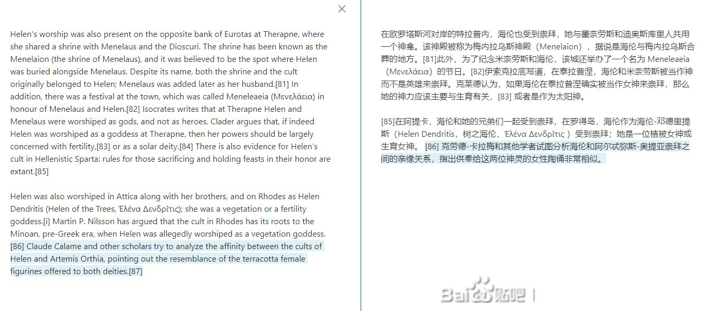
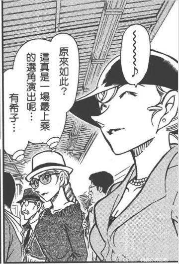
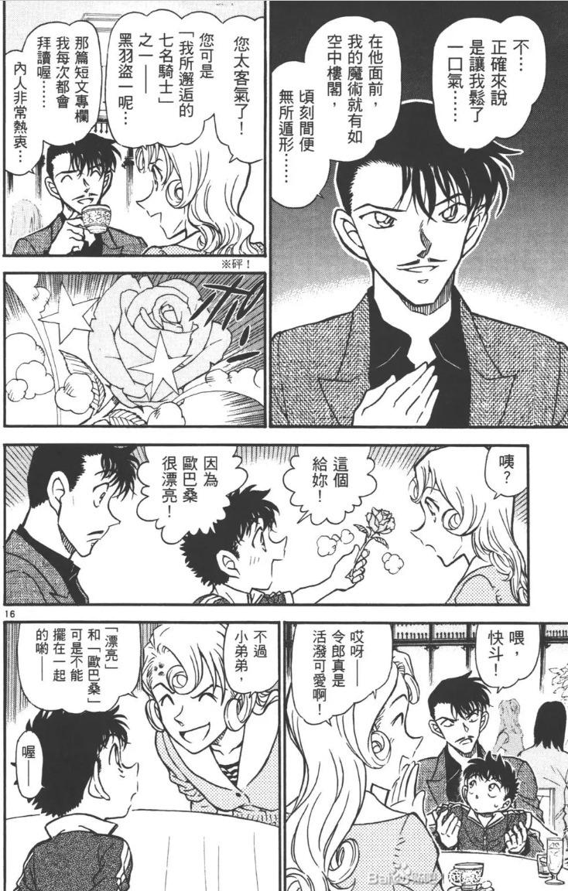

先讲讲自己的属性：
从大概是小学生开始可以分析有点剧情时就在看动画版的过程中丝滑地成为一名柯哀党，然后从m15m16时期开始玩贴吧，看到柯哀分析文吧后点了关注就一直默默潜水直到不太关注名柯。。。
但身边也有看名柯的朋友(虽然吃的不是一样的cp)抓去给剧场版贡献票房(被抓去看了唐红零执和绯弹)
最近是被m26炸了回来，又看到了B站上各种柯哀分析后再次下回了贴吧看吧里各位的分析，在看到吧里动森楼分析(指路老粉拜吧-关于73动物之森里信息的分析)后被黑猫老师指出青山刚昌玩的希腊神话元素、金苹果论和兰新志三人的对应惊到了，跑去翻百科和拿出我尘封多年的希腊神话启蒙书后，发现了一些很不得了的走向，当中牵涉到不少暴论，因此打算开一栋楼来分析一下到底是我想多了还是青山刚昌这老头真的是把一切融合贯通，将神与人、历史与神话玩弄在自己创造的世界中的天才。
我的希腊神话启蒙书镇楼。
从大概是小学生开始可以分析有点剧情时就在看动画版的过程中丝滑地成为一名柯哀党，然后从m15m16时期开始玩贴吧，看到柯哀分析文吧后点了关注就一直默默潜水直到不太关注名柯。。。
但身边也有看名柯的朋友(虽然吃的不是一样的cp)抓去给剧场版贡献票房(被抓去看了唐红零执和绯弹)
最近是被m26炸了回来，又看到了B站上各种柯哀分析后再次下回了贴吧看吧里各位的分析，在看到吧里动森楼分析(指路老粉拜吧-关于73动物之森里信息的分析)后被黑猫老师指出青山刚昌玩的希腊神话元素、金苹果论和兰新志三人的对应惊到了，跑去翻百科和拿出我尘封多年的希腊神话启蒙书后，发现了一些很不得了的走向，当中牵涉到不少暴论，因此打算开一栋楼来分析一下到底是我想多了还是青山刚昌这老头真的是把一切融合贯通，将神与人、历史与神话玩弄在自己创造的世界中的天才。
我的希腊神话启蒙书镇楼。
首先我要叠些甲：
1.由于本人已经相当久没关注名柯相关(动画组那些烂到出圈的原创集数被吐槽除外)，目前正在以把鼠标键按烂的速度补剧情，所以难免会对目前主线以及登场人物有不太了解的情况。
2.由于是首次准备将自己的推论整理并发布出网上，再加上太久没用贴吧，对贴吧的操作也不是很熟练，请各位见谅以及在合理范围内友好讨论。(土下座)
1.由于本人已经相当久没关注名柯相关(动画组那些烂到出圈的原创集数被吐槽除外)，目前正在以把鼠标键按烂的速度补剧情，所以难免会对目前主线以及登场人物有不太了解的情况。
2.由于是首次准备将自己的推论整理并发布出网上，再加上太久没用贴吧，对贴吧的操作也不是很熟练，请各位见谅以及在合理范围内友好讨论。(土下座)
2024-02-29 11:11 | 暗羽靖玄:(后续有什么甲要叠的话也会放在此层评论里)
cy
先说第一个暴论，在看到黑猫老师借动森里青山刻意放置的画后推论出金苹果论，以及由金苹果的送出推断出的兰新志三人在金苹果之争的神话人物对应后，我突然灵光一闪地感觉到一件事。
可能之后工藤新一，或者说是柯南，真的要实打实地经历一场假死了。
金苹果(告白)已然送出，那特洛伊(特洛伊的定义将在后续推论里揭晓)的破落就板上钉钉，帕里斯(工藤新一)的死亡(无论是一时假死还是真的销户)就无所避免了。
可能之后工藤新一，或者说是柯南，真的要实打实地经历一场假死了。
金苹果(告白)已然送出，那特洛伊(特洛伊的定义将在后续推论里揭晓)的破落就板上钉钉，帕里斯(工藤新一)的死亡(无论是一时假死还是真的销户)就无所避免了。

已收藏，莫辜负
在开始挖掘神话元素之前，我们要清楚一个概念：现在我们所知晓的那些希腊神话到底是怎么流传下来的呢？是当时先民口耳相传的口述传说。在变成如今集结成册，各有少许不同的希腊神话前，这些故事的载体是不同的颂诗、舒情诗、游记、绘图手稿以及最长被引用作神话素材的，史诗。
最著名的几部史诗分别是现今很多人由此取材的荷马史诗《伊利亚特》、《奥德赛》、赫西俄德的《神谱》以及《工作与时日》，这四本史诗组成了我们现今所知的希腊神话的框架，是现今希腊神话研究里主要文献之一。
最著名的几部史诗分别是现今很多人由此取材的荷马史诗《伊利亚特》、《奥德赛》、赫西俄德的《神谱》以及《工作与时日》，这四本史诗组成了我们现今所知的希腊神话的框架，是现今希腊神话研究里主要文献之一。
诶不是，这要怎么解决啊，我写了啥被ban了啊(傻眼)
2024-02-29 12:05 | 暗羽靖玄:哪个词儿不对了被ban了啊(哀嚎)2024-02-29 12:24 | 樱花ぁあ飘落:试试可能是神话传说的人名或者战争之类的字眼？中间加个分割符号试试……我也很久不用贴吧了2024-02-29 12:35 | 暗羽靖玄:目前尝试在在电脑里打完一段再发试试看了(在敲键盘)
收藏，等后续
蹲
蹲一波
收藏，期待
<概念厘清>
在开始挖掘神话元素之前，我们要先弄清楚一个概念：我们现在所知晓的那些希腊神/话到底是怎么流传下来的呢？是当时先民口耳相传的口述传/说。在变成如今集结成册，各有少许细节上不同的希腊神/话前，这些故事的载体是不同的颂诗、抒情诗、游记、绘图手稿、各式艺术品以及最常被引用作神/话素材的，史/诗。最著名的几部史/诗分别是现今很多人由此取材的荷马史/诗⟪伊利亚特⟫、⟪奥德赛⟫、赫西俄德的⟪神谱⟫以及讲述神人之间关系周期的⟪工作与时日⟫，这四本史/诗组成了我们现今所知的希腊神/话的框架，是现今希腊神/话研究里主要文献之一。
（我不死心重试一遍）
在开始挖掘神话元素之前，我们要先弄清楚一个概念：我们现在所知晓的那些希腊神/话到底是怎么流传下来的呢？是当时先民口耳相传的口述传/说。在变成如今集结成册，各有少许细节上不同的希腊神/话前，这些故事的载体是不同的颂诗、抒情诗、游记、绘图手稿、各式艺术品以及最常被引用作神/话素材的，史/诗。最著名的几部史/诗分别是现今很多人由此取材的荷马史/诗⟪伊利亚特⟫、⟪奥德赛⟫、赫西俄德的⟪神谱⟫以及讲述神人之间关系周期的⟪工作与时日⟫，这四本史/诗组成了我们现今所知的希腊神/话的框架，是现今希腊神/话研究里主要文献之一。
（我不死心重试一遍）
cy
——青山真的有在自己的漫画中玩神/话梗吗？
当然有了！先不说别的我不太熟的日本当地的神/话/传/说，你先看一眼怪盗基德要找的那颗传说中的宝石潘多拉再组织一下语言.jpg。
这老头不仅不是不懂，而是相当会抓取很多神话和历史传说元素来给自己笔下的角色以及建构的剧情，活用这些从前人积累的故事中大部分人耳熟能详的比喻或者暗示，向知晓这些暗喻的人发起推理剧情走向的挑战。毕竟他很早之前就已经借笔下人物之口向读者发起挑战了嘛。
当然有了！先不说别的我不太熟的日本当地的神/话/传/说，你先看一眼怪盗基德要找的那颗传说中的宝石潘多拉再组织一下语言.jpg。
这老头不仅不是不懂，而是相当会抓取很多神话和历史传说元素来给自己笔下的角色以及建构的剧情，活用这些从前人积累的故事中大部分人耳熟能详的比喻或者暗示，向知晓这些暗喻的人发起推理剧情走向的挑战。毕竟他很早之前就已经借笔下人物之口向读者发起挑战了嘛。
2024-03-01 06:28 | bearaven:柯哀福音2024-03-01 06:32 | 暗羽靖玄:回复 bearaven :这家伙玩的可不只是jdj，希腊罗马神话，日本本土神话和中国神话的那些历史传奇这么简单啊(苦笑)2024-03-01 06:36 | bearaven:是更加源流和神话母题的什么，否则无法做到这地步吧。2024-03-01 06:39 | 暗羽靖玄:回复 bearaven :这家伙甚至掺了点古埃及神话(我没感觉错的话)2024-03-01 06:40 | 暗羽靖玄:回复 bearaven :我已经把自己有的古埃及神话相关书籍拿出来了2024-03-01 06:44 | bearaven:回复 暗羽靖玄 :毕竟闪族三教能追溯到Exodus和阿顿神2024-03-01 06:46 | 暗羽靖玄:赤井家真的很古埃及。。。母慈子孝(噗嗤)而且那个眼线。。。
2.与工藤新一对应，相当杯具的背锅担当——倒霉的特洛伊王子帕里斯
先说说特洛伊战争起源重心——被宙斯推出来当挡箭牌的倒霉鬼——尚不知晓自己命运的帕里斯吧，据我手边的希腊神话简史和维基百科上的资料所载，帕里斯是当年特洛伊国王普利阿摩斯和王后赫卡柏所生的幼子。在王后怀着他的时候曾做过一个可怕的梦，梦到自己生出一根燃烧的火炬，点燃了整个特洛伊城并将整个城燃烧殆尽。从梦中惊醒的她将梦告诉了国王，国王传召预言家后得到了将降生的这个王子将为这个国家带来灾祸的消息，预言家也劝告国王王后在孩子诞生后就将他遗弃。
国王和王后为了国家安全同意了，在孩子出生后将其交由一位叫亚格劳斯的牧羊人遗弃在伊达山，牧羊人将新生儿遗弃五天后回到原地却发现幼儿被母熊喂哺甚至吃得饱饱没被野兽伤害，于心不忍便将他抱回来，取名为帕里斯(希腊语背包之意)，作为牧羊人的儿子抚养。
在维基百科和我手边的书籍均对帕里斯的外貌和性格特征有相当正面的描述：
[在牧羊人的看顾下，王子在贫苦艰辛的环境长大，成为一位强壮又英俊的美少年，他保护着牧人们反抗在伊达山上出没的强盗，因此人们尊称他为亚历山大，即人类的救助者。]——我手边的书
维基百科上的描述及译文： 不知道是我看的神话书的版本的问题还是荷马史诗原著就是这么讲的，金苹果之争的最后当帕里斯做出裁决后，他忘了美神阿芙萝黛缇给他的承诺(记忆混乱还是单纯因为神是不可视的我就不清楚了)，娶了另一位女子为妻，后来才因缘际会下恢复王子身份，遇上爱神许诺的最美丽的女人
先说说特洛伊战争起源重心——被宙斯推出来当挡箭牌的倒霉鬼——尚不知晓自己命运的帕里斯吧，据我手边的希腊神话简史和维基百科上的资料所载，帕里斯是当年特洛伊国王普利阿摩斯和王后赫卡柏所生的幼子。在王后怀着他的时候曾做过一个可怕的梦，梦到自己生出一根燃烧的火炬，点燃了整个特洛伊城并将整个城燃烧殆尽。从梦中惊醒的她将梦告诉了国王，国王传召预言家后得到了将降生的这个王子将为这个国家带来灾祸的消息，预言家也劝告国王王后在孩子诞生后就将他遗弃。
国王和王后为了国家安全同意了，在孩子出生后将其交由一位叫亚格劳斯的牧羊人遗弃在伊达山，牧羊人将新生儿遗弃五天后回到原地却发现幼儿被母熊喂哺甚至吃得饱饱没被野兽伤害，于心不忍便将他抱回来，取名为帕里斯(希腊语背包之意)，作为牧羊人的儿子抚养。
在维基百科和我手边的书籍均对帕里斯的外貌和性格特征有相当正面的描述：
[在牧羊人的看顾下，王子在贫苦艰辛的环境长大，成为一位强壮又英俊的美少年，他保护着牧人们反抗在伊达山上出没的强盗，因此人们尊称他为亚历山大，即人类的救助者。]——我手边的书
维基百科上的描述及译文： 不知道是我看的神话书的版本的问题还是荷马史诗原著就是这么讲的，金苹果之争的最后当帕里斯做出裁决后，他忘了美神阿芙萝黛缇给他的承诺(记忆混乱还是单纯因为神是不可视的我就不清楚了)，娶了另一位女子为妻，后来才因缘际会下恢复王子身份，遇上爱神许诺的最美丽的女人
3. 与宫野志保对应的，可能不止神话记载里那么肤浅的，斯巴达的海伦
看完对应工藤新一的帕里斯，我们再来看看跟灰原哀，或者说是宫野志保对应的那个据说是希腊神话里世界上最美的女人——斯巴达的海伦或者说，更为人熟知的，引发特洛伊之战的海伦。
首先，根据大多数的记载，出现在荷马史诗中的海伦是奥林匹斯神王宙斯和斯巴达王后勒达的女儿，换句话说，她是混血儿。
在神话中，宙斯化身天鹅与勒达亲密(委婉防被吞)后，这位王后后来产下两颗蛋，分别孵化出两男两女两对双胞胎，其中一位便是海伦。
也根据希腊神话中的混乱风气(委婉)，这两对双胞胎之中通常都只有其中一个是半神半人，另一个则是完完全全的凡人。(感觉可以与宫野姐妹作个对应) 但吊诡的是，不管哪个版本的相关神话，女性双胞胎里半神半人的永远是海伦。（当时翻资料的我鸡皮疙瘩都起来了）
其次，斯巴达的海伦在幼年时期也曾遭遇过拐劫离开家乡去往外地的经历(与宫野志保的生平经历相符)，直到来自雅典的绑匪被神惩罚时无暇顾及她时，她的兄弟找了过来并将她迎回斯巴达。这或者也是能用来对应初遇论的一个点？(存疑)
第三：海伦在遇见帕里斯后，跟随帕里斯出逃。
•在漫画来自黑衣组织的女子篇里哀的自白中，我们可以得知她服药变小逃离黑衣组织后的第一个行动就是企图找到那个跟自己一样处境的试药受害者——柯南才在工藤宅前晕倒，被经过的阿笠博士带回阿笠宅的 •同样的，在再会篇中那个明明很怕但又跟着柯南去杯户饭店的灰原哀，在最后也被摘掉眼镜的工藤新一背着逃离着火的酒窖。 这感觉就相当像被帕里斯带走的海伦，同时虽然不同派别的诗人都众说纷纭，不少记载也指明了海伦是自愿跟随帕里斯并对其有好感的。
第四：被夸赞的，据说是世界上最美丽的女人
神话中的海伦由古至今都是艺术家的技艺挑战。要如何才能将这份人人心中都不一样的美流传于后世呢？直到现在都还没有最好的定论。那看上去对希腊神话不是很陌生的青山刚昌会借此挑战一下吗？
这个嘛。。。。就，各位帮我补充一下漫画里小哀受到的那些夸赞和在某位大侦探审美观中的大美人是啥样子？(脑子被糊住了拿不出漫画截图)
第五：能与扑克牌论，西洋棋论相辅相成的地位论证
希腊神话中，海伦在金苹果之争前就已经有了一个很明显的身份：斯巴达的王后。
同时，现在亦有历史学家在经过广泛考古研究后声称，历史中的真正的海伦是在古希腊青铜时代中一位势力强大的女王，大概生活在西元前1250年左右的希腊城邦斯巴达地区，同时亦有考古学家在斯巴达及泛希腊城邦中找到民众对海伦的崇拜记载。
希腊神话中，在特洛伊之战的中后期，特洛伊也出现了盟友——来自远方的亚马逊女战士。
那么现在的小哀有意想不到的盟友吗？有呀。副班主任若狭老师，那个浅香啊。
看完对应工藤新一的帕里斯，我们再来看看跟灰原哀，或者说是宫野志保对应的那个据说是希腊神话里世界上最美的女人——斯巴达的海伦或者说，更为人熟知的，引发特洛伊之战的海伦。
首先，根据大多数的记载，出现在荷马史诗中的海伦是奥林匹斯神王宙斯和斯巴达王后勒达的女儿，换句话说，她是混血儿。
在神话中，宙斯化身天鹅与勒达亲密(委婉防被吞)后，这位王后后来产下两颗蛋，分别孵化出两男两女两对双胞胎，其中一位便是海伦。
也根据希腊神话中的混乱风气(委婉)，这两对双胞胎之中通常都只有其中一个是半神半人，另一个则是完完全全的凡人。(感觉可以与宫野姐妹作个对应) 但吊诡的是，不管哪个版本的相关神话，女性双胞胎里半神半人的永远是海伦。（当时翻资料的我鸡皮疙瘩都起来了）
其次，斯巴达的海伦在幼年时期也曾遭遇过拐劫离开家乡去往外地的经历(与宫野志保的生平经历相符)，直到来自雅典的绑匪被神惩罚时无暇顾及她时，她的兄弟找了过来并将她迎回斯巴达。这或者也是能用来对应初遇论的一个点？(存疑)
第三：海伦在遇见帕里斯后，跟随帕里斯出逃。
•在漫画来自黑衣组织的女子篇里哀的自白中，我们可以得知她服药变小逃离黑衣组织后的第一个行动就是企图找到那个跟自己一样处境的试药受害者——柯南才在工藤宅前晕倒，被经过的阿笠博士带回阿笠宅的 •同样的，在再会篇中那个明明很怕但又跟着柯南去杯户饭店的灰原哀，在最后也被摘掉眼镜的工藤新一背着逃离着火的酒窖。 这感觉就相当像被帕里斯带走的海伦，同时虽然不同派别的诗人都众说纷纭，不少记载也指明了海伦是自愿跟随帕里斯并对其有好感的。
第四：被夸赞的，据说是世界上最美丽的女人
神话中的海伦由古至今都是艺术家的技艺挑战。要如何才能将这份人人心中都不一样的美流传于后世呢？直到现在都还没有最好的定论。那看上去对希腊神话不是很陌生的青山刚昌会借此挑战一下吗？
这个嘛。。。。就，各位帮我补充一下漫画里小哀受到的那些夸赞和在某位大侦探审美观中的大美人是啥样子？(脑子被糊住了拿不出漫画截图)
第五：能与扑克牌论，西洋棋论相辅相成的地位论证
希腊神话中，海伦在金苹果之争前就已经有了一个很明显的身份：斯巴达的王后。
同时，现在亦有历史学家在经过广泛考古研究后声称，历史中的真正的海伦是在古希腊青铜时代中一位势力强大的女王，大概生活在西元前1250年左右的希腊城邦斯巴达地区，同时亦有考古学家在斯巴达及泛希腊城邦中找到民众对海伦的崇拜记载。

另外，我大概也知道了南英老师在伦敦篇分析里那个消失的alpha究竟藏在哪里了（谢谢你育碧！育碧我大哥！！！）
第六：意想不到的女性盟友希腊神话中，在特洛伊之战的中后期，特洛伊也出现了盟友——来自远方的亚马逊女战士。
那么现在的小哀有意想不到的盟友吗？有呀。副班主任若狭老师，那个浅香啊。
2024-03-01 00:57 | 咕咕188:兄弟带回来？宫野家名誉长子来咯2024-03-01 01:30 | 🐷亿只猪🐷:工藤在漫画中唯一夸赞的女性是ktv杀人事件里的女经纪人2024-03-01 06:41 | 续航发个:回复 🐷亿只猪🐷 :芙莎绘也夸过大美人吧2024-03-01 06:56 | 🐷亿只猪🐷:回复 续航发个 :啊是的，而且芙纱绘女士其实比那个经纪人更符合哀酱的特点！2024-03-03 21:30 | -Juliet:逼近灰原的黑影，三小只夸赞宫野志保是个长得很像小哀的大美女2024-03-18 10:32 | adlock😈:@bearaven 你说过的宫野姐妹半神半人的意向2024-03-19 00:28 | bearaven:回复 adlock😈 :是的。比较容易就能看出天赋/异能/神力的那个，和并非这样的那个。但是“完全的人类”的那个能做出的事都可称为人类的顶峰了。2024-03-19 07:41 | 暗羽靖玄:回复 bearaven :顺带一提，神话中海伦的同胞姐妹虽是凡人但也不是什么省油的灯，她超狠的(虽然也有她夫家的恶毒诅咒buff的因素)2024-04-09 12:47 | 亲爱的久木凛子:回复 咕咕188 :我猜也有可能是赤井？毕竟大表哥而且都有美国经历
另外再补充一下，神话中海伦的形象在时间的推移下也出现了很有趣的变化，而这些变化也是青山老头经常在用的。
比如月之意向 以及j/d/j 这种元素。。。细想就很有趣呢。。。。
比如月之意向 以及j/d/j 这种元素。。。细想就很有趣呢。。。。
2024-03-01 00:47 | bearaven:阿尼玛四阶段，夏娃-海伦-玛丽亚-索菲亚 最高阶段是智慧的女神2024-03-01 04:12 | 暗羽靖玄:回复 bearaven :你别说，你还真别说.jpg，哀身上还真的有2024-03-01 05:20 | bearaven:回复 暗羽靖玄 :是啊。东尾玛丽亚也是旁敲侧击的影子，这名字是炫脸上的。 艾琳-爱莲娜-海莲娜-海伦； 1/2的顶点，不发音的h，法国风的有希子（3的比法），致敬东方快车的一个关键点。2024-03-01 05:25 | 暗羽靖玄:回复 bearaven :不是，我是指，我挖出来的希腊元素，他真的埋了智慧女神的元素在哀身上，而且经过我的暴论后竟然变得更浪漫了(刚刚在挖青山埋在新一身上的除了帕里斯以外别的神话元素时惊觉)2024-03-01 05:30 | bearaven:回复 暗羽靖玄 :没错，本来这样就够了。后来他嫌没人发现不明显，贴脸剧透了啊2024-03-01 05:31 | bearaven:回复 bearaven :哀就是青山花费30年塑造的阿尼玛，但是他觉得没人发现之后等于自降难度大放送这个线索，告诉你就是全部都给哀了2024-03-01 05:32 | 暗羽靖玄:回复 bearaven :我感觉挖到了工藤新一／柯南的总成长弧光。。。。要是我挖到的暗示是正确的话。。。2024-03-01 05:35 | bearaven:回复 暗羽靖玄 :新一最多到亚力山大，真正的智慧（太阳/阿波罗）和小孩般那个得意的笑容（幽默/赫耳墨斯/trickster）是变成柯之后才够到的境界。 柯比新一成长度高多了，变回新一才像“变小/退行”2024-03-01 05:36 | bearaven:回复 暗羽靖玄 :miss glass 这个影子也是挑了密涅瓦这个智慧女神2024-03-01 05:37 | 暗羽靖玄:回复 bearaven :不，我挖到的那个元素，不是荷米斯，是另一个，在罗马神话里风评逆转那位2024-03-01 05:39 | bearaven:回复 暗羽靖玄 :有意思2024-03-01 05:41 | 暗羽靖玄:回复 bearaven :非常有意思(一边看着维基百科一边感觉电流在我身上游走2024-04-29 00:08 | 洛熙晨m:回复 暗羽靖玄 :请问djd是什么，去百度了没搜到🥺2024-04-29 05:49 | 暗羽靖玄:回复 洛熙晨m :那个以一己之力把欧洲其他信仰打成异教，呼风唤雨超过一千年的独尊一神，大招为【相信我】和能拿经书砸人，以及跟伊/斯/兰抢圣 地的一 神 教(我认为我现在已经说得很明显了)2024-05-02 13:10 | 洛熙晨m:回复 暗羽靖玄 :懂了，谢谢大佬！
先把之前在动森楼里的对应点稍加润色放上来，关于暴论我在捋一捋，晚上更新。(再不眯一会儿人要没了.jpg)
顶一下
期待
海伦和哀真的有点能对应上啊，混血，有姐妹，姐妹是凡人（比较普通的人），被拐离开家乡过，后来又回来了，真的好像啊
好，收藏了慢慢看
收藏了，慢慢看
他到底揉了多少东西进去啊
2024-03-01 03:24 | 暗羽靖玄:他融了好多东西进去，每个角色身上都有不止一个神话或者宗教梗，全是叠起来的意向和符号，多到我越挖越怕，以及我终于明白南英老师说伦敦篇应该关注它本身标题的意思了，真就是默／示／录啊（鸡皮疙瘩完全停不下来)2024-03-01 03:27 | 暗羽靖玄:在察觉到伦敦篇竟然还有可爆破的东西的时候，我真的是惊了2024-03-01 03:29 | 即将02的废物月:回复 暗羽靖玄 :期待了2024-03-01 05:17 | 世界上没有真理:回复 暗羽靖玄 :青山是不是有修過符號學啊？符號用起來得心應手真是可怕，此人真的博學多聞2024-03-01 05:26 | 暗羽靖玄:回复 世界上没有真理 :我怀疑他家书柜好几十本各地神话百科在，真的好离谱2024-03-01 05:43 | bearaven:回复 暗羽靖玄 :就是默示录。字面意思的。默示录是干嘛的，伦敦篇就是干嘛的。 他说结局早定好了，可信度非常高。 融梗玩梗得飞起2024-03-01 05:44 | bearaven:回复 世界上没有真理 :所以他的动森岛就是青山宇宙神话大系的具现化2024-03-01 05:44 | 暗羽靖玄:回复 bearaven :是的，我现在察觉到这一点了2024-03-01 05:55 | bearaven:回复 世界上没有真理 :他的得意助手可是被他贴满了看着就足够吓跑人的符号，直觉/灵性/文学素养/生活经验够的全部都会觉得不对劲，还留下来的应该就是他最想定点爆破灭杀的。2024-03-01 06:04 | bearaven:回复 暗羽靖玄 :伦敦细节分析3。金星与星期五，土星和星... 因为是默示录，所以会星期五/金曜日和金星展开追逐战，被逼得用了一次电话亭超人变身，所以会星期六/土曜日和miss glass 合作打boss。同时也是魔术师正式表演前的预演。2024-03-01 06:13 | 世界上没有真理:回复 bearaven :想看他爆殺那些沒有文學素養的新蘭粉2024-03-01 06:16 | bearaven:回复 世界上没有真理 :“永恒”“世纪之吻”，“灵魂出卖”，愿望全部都满足了不是吗，还有什么不甘心的呢2024-03-01 06:17 | 暗羽靖玄:回复 世界上没有真理 :很快了，我预感到他复刊就开始上强度搞朗姆篇的高潮了(要是我的猜测和暴论没错的话)，工藤新一的假死已经要安排上舞台了2024-03-01 06:18 | bearaven:回复 世界上没有真理 :现实生活中体会出正常亲密关系的也一样会跑的……不是文青歧视没文学素养，真的是还满足条件的太过一言难尽。2024-03-01 06:19 | 暗羽靖玄:回复 世界上没有真理 :而且是会像红黑把水无塞回去黑衣组织那种程度的剧情(不过这次很可能是由哀导安排)2024-03-01 06:19 | bearaven:回复 暗羽靖玄 :今年年底2024-03-01 06:34 | 即将02的废物月:回复 暗羽靖玄 :这个确实有点夸张2024-03-01 06:38 | 暗羽靖玄:回复 即将02的废物月 :难讲，我们可能离完结篇不远了(帕里斯之死与特洛伊战争完结真的离不了多远)2024-03-01 06:48 | bearaven:回复 暗羽靖玄 :哀兔兰蛇论。金星与蛇。 明年会有什么呢。2024-03-01 06:55 | 即将02的废物月:回复 暗羽靖玄 :莫非真的30就是完结篇了？2024-03-01 06:55 | 世界上没有真理:回复 暗羽靖玄 :超想看~我更想知道毛利蘭會在裡面扮演什麼角色？2024-03-01 06:56 | 世界上没有真理:回复 bearaven :年底的1213號是星期五2024-03-01 06:58 | 暗羽靖玄:回复 bearaven :假死主菜端上来(可能还在兰面前)？2024-03-01 07:11 | bearaven:回复 暗羽靖玄 :兰的生日他很珍惜，青山访谈如是说。一堆人开香槟🍾。我浑身发抖，想通，跟着开。2024-03-01 07:13 | 暗羽靖玄:回复 bearaven :太符合这个混沌的坏心眼老爷爷了2024-03-01 07:20 | bearaven:回复 暗羽靖玄 :X-Day 我本来只是猜不透会用什么，那个访谈一出，浑身过电。 X是女性特有的爱的符号，是kiss，但也会变成憎恶的烙印，被银之矢（Silver Arrow）贯穿的箭靶2024-03-01 07:23 | bearaven:回复 暗羽靖玄 :福尔摩斯默示录与濃紅の予兆，正确理解世... 叠杀人书的一例…… 各种地方出发最后是符号大联欢。2024-03-01 07:25 | 暗羽靖玄:回复 bearaven :我同时想通了南英老师的共同体理论和为什么柯哀两人互换身份却又没啥违和感的原因了，如果我抽取的元素正确的话2024-03-01 07:26 | 暗羽靖玄:回复 bearaven :要素正确的话工藤新一(江户川柯南)这辈子都玩不过宫野志保(灰原哀)了2024-03-01 07:30 | 即将02的废物月:回复 暗羽靖玄 :妻管严说是2024-03-01 07:32 | 暗羽靖玄:回复 即将02的废物月 :是家庭弟位(爆笑)2024-03-01 19:44 | 贴吧用户_aCQNEJG:回复 世界上没有真理 :作者不是曾经学过西洋画吗？2024-03-11 02:57 | ww11267z:特洛伊最有名的应该是特洛伊木马吧，那个在空马里装满人被敌人自己带回去的片段2024-03-11 15:27 | 暗羽靖玄:回复 ww11267z :那不妨猜猜，现在有多少木马在特洛伊？2024-03-12 01:01 | ww11267z:有点乱啊，首先这场战争最后是希腊赢了，海伦被带回去了，那么现在的问题是特洛伊现在是哪一方，红吗，帕里斯中毒后求救不成死亡，而后有了伪装的特洛伊木马，那么问题就是如果这是组织的人在木马里的话，他们最后还带回了海伦，小哀在某人死后被带回去了，波本吗。那么这场特洛伊战争后应该就还有一场2024-03-20 09:24 | 暗羽靖玄:回复 ww11267z :那如果说，特洛伊同时也是根据地的概念呢？2024-03-21 23:39 | ww11267z:回复 暗羽靖玄 :工藤家啊，优作、有希子、秀一，fbi2024-03-22 03:28 | 暗羽靖玄:回复 ww11267z :那么，【江户川柯南】的根据地是哪个地方呢？他现在住在哪呢？2024-03-22 10:35 | ww11267z:事务所？有点抽象啊2024-03-22 11:41 | 暗羽靖玄:回复 ww11267z :这就是青山的手笔啊(我推出来的时候我也很惊讶但合情合理


诶不是，青山你小子故意的吧(被翻到的资料整得目瞪口呆)
正挖资料整理中，今天我们讲一下金苹果，金苹果之争和特洛伊战争的大概脉络，以及那些以及发现用在漫画里的相关元素
2024-03-01 05:20 | 即将02的废物月:期待
默示录/伦敦篇/希区柯克
蹲
海伦的视角太厉害了
海伦的视角太厉害了
诛仙阵要启动第一剑了吗
赶上直播了？
是直播！第一次赶上
在打了在打了.jpg
2024-03-01 07:48 | 即将02的废物月:加油加油2024-03-01 09:24 | 即将02的废物月:被吞了吗2024-03-01 09:28 | 暗羽靖玄:回复 即将02的废物月 :还在打(刚刚去吃饭了)2024-03-01 09:30 | 即将02的废物月:回复 暗羽靖玄 :原来如此
<提出暴论前的关键神话元素提取>
01.金苹果篇
首先，我们要挖青山笔下的⌈金苹果⌋是什么东西之前，我们必须先知道，神话中金苹果的由来和所代表的概念。所以请各位跟我一起进入最初导致后续这一串事件发生的，那场没邀请不和女神参加的，英雄与海中女神的婚礼。
事发在人间英雄佩琉斯（Peleus）与海中女神忒提斯的婚宴，由于婚事直接由天神宙斯撮合，当时邀请了一批神级较高的神祇赴宴。据一些史诗记载是因为金制的名贵餐具有限——当然也不排除其本身不受欢迎的因素——管辖纠纷的女神厄里斯未被邀请；觉得受到冒犯的厄里斯不请自来，一言不发地在宴席上留下一个硕大华丽的黄金苹果，上面刻有“καλλίστῃ”（kallistē(i) / Kallisti）的字样，意思是“献给最美丽的女神”，之后该物被称为“引致纠纷的金苹果”。
在场神级最高、同时也最为美艳的三位女神：雅典娜、阿佛罗狄忒和赫拉卷入了金苹果所引致的纠纷，她们要求宙斯评判谁可以获得金苹果。宙斯则认为，凡间一位潇洒俊朗、一表人才的王子帕里斯更适合成为这道难题的评判，其人当时正在特洛伊城附近的艾达山上牧羊。于是，天后赫拉、智慧女神雅典娜与爱神阿佛罗狄忒在神使赫耳墨斯的前导下，前往艾达山请帕里斯王子作仲裁。之后帕里斯将象征“最美女神”的金苹果给了爱神阿佛罗狄忒，因为她承诺帕里斯将会得到人间最美丽女子海伦的爱情。 ——摘自维基百科与金苹果相关条目
好了，现在我们可以开始提炼金苹果中主要可玩弄，能拿来当梗的要素了。
神话里自带的象征属性：不可抗拒的诱惑（尤其是对女性特攻）
•可以是一些难以拒绝的，自己非常渴求的东西
提取要素一：引起纠纷的事物（可以不是实物）
•可以是一个称号（如当事金苹果），也可以是一种权力，又或者说，一段感情？
提取要素二：别人的承认（哪怕让人为难）
•需要一些仲裁人的承认，但很多时候也会因此得罪人（所以宙斯那个混账把烫手山芋推到了凡间就是怕自己裁决后遭到没有得到这颗金苹果的另两个女神接近无限期的报复，特别是三个女神他都惹不起，一个他老婆一个他女儿一个他儿媳）
提取要素三：实质的行动或者口头承诺（将⌈苹果⌋交到被选择者手中）
•帕里斯思考后的裁决令阿佛罗狄忒获得带有最美女神象征的金苹果，但也同时导致了他遭到另外两位女神的敌视和报复。
提取要素四（与希腊神话无关）：永保青春的永生之果
•在北欧神话中，黄金苹果能让诸神保持青春。（青山老头他。。。不会吧？！）
那么，这些要素有多少个能套用到名柯的感情线争锋中呢？
答案是除了要素四（那可能是主线相关的象征），其他都可以看作是老头堆到感情线的大暗示！
将这个答案套到绝对男主工藤新一身上，这颗⌈金苹果⌋到底是什么呢？
那应该就是工藤新一的⌈女朋友⌋、或者该说的是，工藤新一的⌈爱人⌋，未来的⌈伴侣⌋了吧，奔着结婚去的那种⌈终身伴侣⌋。
01.金苹果篇
首先，我们要挖青山笔下的⌈金苹果⌋是什么东西之前，我们必须先知道，神话中金苹果的由来和所代表的概念。所以请各位跟我一起进入最初导致后续这一串事件发生的，那场没邀请不和女神参加的，英雄与海中女神的婚礼。
事发在人间英雄佩琉斯（Peleus）与海中女神忒提斯的婚宴，由于婚事直接由天神宙斯撮合，当时邀请了一批神级较高的神祇赴宴。据一些史诗记载是因为金制的名贵餐具有限——当然也不排除其本身不受欢迎的因素——管辖纠纷的女神厄里斯未被邀请；觉得受到冒犯的厄里斯不请自来，一言不发地在宴席上留下一个硕大华丽的黄金苹果，上面刻有“καλλίστῃ”（kallistē(i) / Kallisti）的字样，意思是“献给最美丽的女神”，之后该物被称为“引致纠纷的金苹果”。
在场神级最高、同时也最为美艳的三位女神：雅典娜、阿佛罗狄忒和赫拉卷入了金苹果所引致的纠纷，她们要求宙斯评判谁可以获得金苹果。宙斯则认为，凡间一位潇洒俊朗、一表人才的王子帕里斯更适合成为这道难题的评判，其人当时正在特洛伊城附近的艾达山上牧羊。于是，天后赫拉、智慧女神雅典娜与爱神阿佛罗狄忒在神使赫耳墨斯的前导下，前往艾达山请帕里斯王子作仲裁。之后帕里斯将象征“最美女神”的金苹果给了爱神阿佛罗狄忒，因为她承诺帕里斯将会得到人间最美丽女子海伦的爱情。 ——摘自维基百科与金苹果相关条目
好了，现在我们可以开始提炼金苹果中主要可玩弄，能拿来当梗的要素了。
神话里自带的象征属性：不可抗拒的诱惑（尤其是对女性特攻）
•可以是一些难以拒绝的，自己非常渴求的东西
提取要素一：引起纠纷的事物（可以不是实物）
•可以是一个称号（如当事金苹果），也可以是一种权力，又或者说，一段感情？
提取要素二：别人的承认（哪怕让人为难）
•需要一些仲裁人的承认，但很多时候也会因此得罪人（所以宙斯那个混账把烫手山芋推到了凡间就是怕自己裁决后遭到没有得到这颗金苹果的另两个女神接近无限期的报复，特别是三个女神他都惹不起，一个他老婆一个他女儿一个他儿媳）
提取要素三：实质的行动或者口头承诺（将⌈苹果⌋交到被选择者手中）
•帕里斯思考后的裁决令阿佛罗狄忒获得带有最美女神象征的金苹果，但也同时导致了他遭到另外两位女神的敌视和报复。
提取要素四（与希腊神话无关）：永保青春的永生之果
•在北欧神话中，黄金苹果能让诸神保持青春。（青山老头他。。。不会吧？！）
那么，这些要素有多少个能套用到名柯的感情线争锋中呢？
答案是除了要素四（那可能是主线相关的象征），其他都可以看作是老头堆到感情线的大暗示！
将这个答案套到绝对男主工藤新一身上，这颗⌈金苹果⌋到底是什么呢？
那应该就是工藤新一的⌈女朋友⌋、或者该说的是，工藤新一的⌈爱人⌋，未来的⌈伴侣⌋了吧，奔着结婚去的那种⌈终身伴侣⌋。
2024-03-01 19:45 | 贴吧用户_aCQNEJG:而且新一对大姐姐，而且尤其是那种年长的大姐姐毫无抵抗力
已收藏，莫辜负
还有吗还有吗
不够看
在打了在打了（敲键盘中)
02.帕里斯的裁决（金苹果之争）篇——尚未成为王子的帕里斯不自知的命运三选一
先在这放个个人理解的时间线补丁：已知金苹果出现的时间点为佩琉斯与忒提斯的婚宴，而他们的儿子阿基里斯是特洛伊战争中希腊联军中最勇猛的勇士，阿基里斯战死后没多久他的儿子又被找来接替他父亲的位置。。。三位女神的金苹果争夺战大概怎么说都吵了至少15到20年以上才找少年帕里斯裁决？（好能吵的一群女神，凡人的命也是命啊）
接下来，让我们看看神话里帕里斯是面对了怎样的诱惑才决定将金苹果交给美神阿佛洛狄忒的：
在场神级最高、同时也最为美艳的三位女神：雅典娜、阿佛罗狄忒和赫拉卷入了金苹果所引致的纠纷，她们要求宙斯评判谁可以获得金苹果。宙斯不愿介入其中，转而让特洛伊的王子（但本人尚未知晓自身身世）帕里斯（外表被形容为潇洒俊朗、一表人才）做出裁决。帕里斯被认为是一位公正、诚信的裁决者：此前，帕里斯的公牛被公牛形态的战神阿瑞斯击败后，帕里斯毫不犹豫地将金冠授予了阿瑞斯。
宙斯把金苹果交给众神信使赫耳墨斯，让他转交到帕里斯手中，并告诉他，女神们会毫无争议地接受他的评判。为了得到苹果，三位女神脱掉衣服，向帕里斯展示自己的美丽。她们还分别试图贿赂帕里斯，向他许诺自己能够给予他的礼物：赫拉提出，可以让他成为整个欧洲和小亚细亚的王；雅典娜则为他提供战斗的智慧和技巧；阿佛洛狄忒则说，要使世界上最美丽的女人——斯巴达的海伦爱上他。帕里斯选择了海伦，将金苹果给了阿佛洛狄忒。但彼时海伦已经嫁给了墨涅拉俄斯国王，因此，帕里斯的决定继而引发了特洛伊战争，并最终摧毁了他自己和自己的城邦特洛伊。 ——摘自维基百科与帕里斯的裁决相关条目
在此我们先整理一下三位女神的贿赂分别是什么方面的便利：
除了现任神王宙斯外，在奥林匹斯众神中地位最高权力最大的天后赫拉：让帕里斯成为整个欧洲和小亚细亚的王→即滔天的权力及权势
受全希腊人敬拜的的智慧、战略和工艺之神雅典娜：提供战斗的智慧及技巧→提升帕里斯的战斗力→可建立强大的军功→即过人的能力
代表爱情和美丽的美神阿佛洛狄忒：能让世界上最美丽的女人——斯巴达的海伦爱上帕里斯→即理想的、在自己认知内最美好的爱情
从场外看这段故事的我们可以得知这次金苹果裁决变成了尚未知道自己是王子身份的帕里斯通向未来命运的一道预选题，而年少无知又无法保持公正的牧羊人之子为自己选择的爱情则是——符合预言的家破人亡。
于是，在这里，我们可以提取到的神话要素是：
将⌈金苹果⌋献给⌈美神⌋→⌈会获得理想的、在自己认知内最为美好的爱情⌋（尽管会因此万劫不复）
。。。。。。何尝不是一种另类的对撒旦献祭呢。（目移）
先在这放个个人理解的时间线补丁：已知金苹果出现的时间点为佩琉斯与忒提斯的婚宴，而他们的儿子阿基里斯是特洛伊战争中希腊联军中最勇猛的勇士，阿基里斯战死后没多久他的儿子又被找来接替他父亲的位置。。。三位女神的金苹果争夺战大概怎么说都吵了至少15到20年以上才找少年帕里斯裁决？（好能吵的一群女神，凡人的命也是命啊）
接下来，让我们看看神话里帕里斯是面对了怎样的诱惑才决定将金苹果交给美神阿佛洛狄忒的：
在场神级最高、同时也最为美艳的三位女神：雅典娜、阿佛罗狄忒和赫拉卷入了金苹果所引致的纠纷，她们要求宙斯评判谁可以获得金苹果。宙斯不愿介入其中，转而让特洛伊的王子（但本人尚未知晓自身身世）帕里斯（外表被形容为潇洒俊朗、一表人才）做出裁决。帕里斯被认为是一位公正、诚信的裁决者：此前，帕里斯的公牛被公牛形态的战神阿瑞斯击败后，帕里斯毫不犹豫地将金冠授予了阿瑞斯。
宙斯把金苹果交给众神信使赫耳墨斯，让他转交到帕里斯手中，并告诉他，女神们会毫无争议地接受他的评判。为了得到苹果，三位女神脱掉衣服，向帕里斯展示自己的美丽。她们还分别试图贿赂帕里斯，向他许诺自己能够给予他的礼物：赫拉提出，可以让他成为整个欧洲和小亚细亚的王；雅典娜则为他提供战斗的智慧和技巧；阿佛洛狄忒则说，要使世界上最美丽的女人——斯巴达的海伦爱上他。帕里斯选择了海伦，将金苹果给了阿佛洛狄忒。但彼时海伦已经嫁给了墨涅拉俄斯国王，因此，帕里斯的决定继而引发了特洛伊战争，并最终摧毁了他自己和自己的城邦特洛伊。 ——摘自维基百科与帕里斯的裁决相关条目
在此我们先整理一下三位女神的贿赂分别是什么方面的便利：
除了现任神王宙斯外，在奥林匹斯众神中地位最高权力最大的天后赫拉：让帕里斯成为整个欧洲和小亚细亚的王→即滔天的权力及权势
受全希腊人敬拜的的智慧、战略和工艺之神雅典娜：提供战斗的智慧及技巧→提升帕里斯的战斗力→可建立强大的军功→即过人的能力
代表爱情和美丽的美神阿佛洛狄忒：能让世界上最美丽的女人——斯巴达的海伦爱上帕里斯→即理想的、在自己认知内最美好的爱情
从场外看这段故事的我们可以得知这次金苹果裁决变成了尚未知道自己是王子身份的帕里斯通向未来命运的一道预选题，而年少无知又无法保持公正的牧羊人之子为自己选择的爱情则是——符合预言的家破人亡。
于是，在这里，我们可以提取到的神话要素是：
将⌈金苹果⌋献给⌈美神⌋→⌈会获得理想的、在自己认知内最为美好的爱情⌋（尽管会因此万劫不复）
。。。。。。何尝不是一种另类的对撒旦献祭呢。（目移）
2024-03-01 18:57 | bearaven:毕竟可能都是献给金星
03.尽量最简略的十年特洛伊之战的浓缩版——最后一年战斗特别快的奇怪但巧妙地有效的奇计
好的我们终于来到荷马史诗中波澜壮阔的特洛伊之战——虽然浓缩了也会是很长很枯燥的一段故事（苦笑），但我尽量简略只留下对我的分析有用的部分：
•出动希腊联军的原因：早在海伦还是少女时，想娶她为妻的追求者们（各国国王和王子）在其中一位求婚者机智的奥德修斯向当时斯巴达国王建议⌈让海伦自己决定，并让所有求婚者起誓，他们对海伦的丈夫永不拿起武器攻击他，并且要求援时全力帮助他⌋后立下誓言，当海伦被帕里斯带走后，当年立誓的国王和王子们便要按誓言出兵
•希腊联军远渡重洋来攻城，而特洛伊和其附近的联邦也组成防守联盟与希腊联军对战，而奥林匹斯神们也因各自的立场分别站在希腊联军和特洛伊两方并施展神力影响战况
站在希腊联军方的神明：雅典娜、希菲托斯、赫拉、赫耳墨斯、忒提斯、波塞冬
站在特洛伊方的神明：阿佛洛狄特、阿波罗、阿雷斯、阿耳忒弥斯
•攻城九年双方互有伤亡，且作为攻击方的希腊联军早有不满及对同盟有防备
最终导致主帅阿伽门农与预言中为希腊军创造胜利局面的阿基里斯不欢而散，阿基里斯及其部队退出战斗，使希腊军一度落于下风
•直到阿基里斯的挚友帕特罗克洛斯被特洛伊主将赫刻托耳王子杀害后阿基里斯才被激发战意，重新加入作战
•参战后他作战勇猛无比，最后赫刻托耳也死于阿基里斯枪下，赫刻托耳的老父普里阿摩斯国王赎回了儿子的尸体
•亚马逊女王彭忒西勒亚和其部下十二名女战士开始支援特洛伊，杀至希腊军中，迫使希腊人节节败退。她指明要与希腊英雄阿基里斯单挑，却被阿基里斯刺死。阿基里斯脱去她的头盔之后，为其美貌所震惊，心中十分悲伤。希腊人将彭忒西勒亚的尸体归还给特洛伊人，特洛伊人将其火葬
•阿基里斯最后被赫刻托耳的弟弟帕里斯在太阳神阿波罗指点下用箭射中脚踝（几乎刀枪不入的他的唯一一个弱点），希腊人的第一勇士因此而死去
•传说阿基里斯死后，他的盔甲成为希腊英雄争夺的焦点，认为这是继任第一勇者的标志。结果奥德修斯最终凭演说击败勇士大埃阿斯，继承了这套由工匠之神赫淮斯托斯打造的神器。大埃阿斯其后因女神雅典娜的诱导而发狂，最终自尽而死
•预言家告诉他们，如果希腊联盟要攻克特洛伊城必须满足的三个条件：其一，将珀罗普斯的骸骨移运到特洛伊；其二，令阿基里斯之子尼俄托勒摩斯参战；其三，令帕拉迪昂神像离开特洛伊城。虽然费了些手段，但他们还是凑足了这三个条件
•奥德修斯去斯凯罗斯岛请出当时只有十几岁的尼俄托勒摩斯（阿基里斯的儿子）。随后，两人前往莱姆诺斯岛找回菲罗克忒忒斯（多年前，菲罗克忒忒斯在前往特洛伊的途中，在克里塞岛被蛇咬伤）。阿伽门农建议将他留在此岛，然后在他不知情的情况下扬帆而去，因而他对希腊军相当仇视，但其好友海格力斯现身，劝服他继续与希腊军一同作战
•帕里斯虽在阿波罗的帮助下射死了阿基里斯，但不久后他也死于希腊英雄菲洛克忒忒斯的毒箭（相传该毒箭是海格力斯临终前赠与菲洛克忒忒斯）。菲洛克忒忒斯对帕里斯说：⌈你一旦阵亡，毁灭之日就在眼前！你的部队，你的城市都将被消灭！⌋；帕里斯也曾在临终的痛苦中请求他原来的妻子俄诺斯用她的药草治疗其被菲洛克忒忒斯击中的创伤，但遭到拒绝，使其最终伤重身亡（帕里斯之死！！划重点要考的！！！！）
•在多次战斗拉锯后，希腊军中的智囊奥德修斯提出了一个从未有人打造过的诡计：打造一只巨大的木马，里面躲著伏兵并佯装撒退，让特洛伊人将其当作战利品带回城内，借此攻入特洛伊。（从这点开始到整个概要结束都是很重要的点！！！千万要记住！！！！划重点！！！）
•木马造出后，奥德修斯又让人假扮被遗弃的士兵引导特洛伊人将木马带回城中，还沉浸在希腊人撤退离开，战争结束的喜悦中的特洛伊人即使被清醒的祭司提醒也依旧听从怂恿而选择将木马带进城中，甚至不惜自行拆开了一段城墙，然后继续庆祝战争完结
•深夜，劝说特洛伊人把木马拉进城的希腊人其实是个间谍。他走到木马边，轻轻地敲了三下，这是约好的暗号。藏在木马中的全副武装的希腊战士一个又一个地跳了出来，他们悄悄地摸向城门，杀死了睡梦中的守军，迅速打开了城门，并在城里到处点火，隐蔽在附近的大批希腊军队如潮水般涌入特洛伊城。10年的战争终于结束，希腊人把特洛伊城掠夺成空，烧成一片灰烬。男人大多被杀死了，妇女和儿童大多被卖为奴隶，特洛伊的财宝都装进了希腊人的战舰。海伦也被原本的丈夫墨涅依斯带回了希腊。特洛伊战争就此结束
我们所需要提炼的元素也就是最后的两点：帕里斯之死和木马计，这就是要构成我第一个暴论的主要组件。
我的第一个暴论是：特洛伊木马论。
好的我们终于来到荷马史诗中波澜壮阔的特洛伊之战——虽然浓缩了也会是很长很枯燥的一段故事（苦笑），但我尽量简略只留下对我的分析有用的部分：
•出动希腊联军的原因：早在海伦还是少女时，想娶她为妻的追求者们（各国国王和王子）在其中一位求婚者机智的奥德修斯向当时斯巴达国王建议⌈让海伦自己决定，并让所有求婚者起誓，他们对海伦的丈夫永不拿起武器攻击他，并且要求援时全力帮助他⌋后立下誓言，当海伦被帕里斯带走后，当年立誓的国王和王子们便要按誓言出兵
•希腊联军远渡重洋来攻城，而特洛伊和其附近的联邦也组成防守联盟与希腊联军对战，而奥林匹斯神们也因各自的立场分别站在希腊联军和特洛伊两方并施展神力影响战况
站在希腊联军方的神明：雅典娜、希菲托斯、赫拉、赫耳墨斯、忒提斯、波塞冬
站在特洛伊方的神明：阿佛洛狄特、阿波罗、阿雷斯、阿耳忒弥斯
•攻城九年双方互有伤亡，且作为攻击方的希腊联军早有不满及对同盟有防备
最终导致主帅阿伽门农与预言中为希腊军创造胜利局面的阿基里斯不欢而散，阿基里斯及其部队退出战斗，使希腊军一度落于下风
•直到阿基里斯的挚友帕特罗克洛斯被特洛伊主将赫刻托耳王子杀害后阿基里斯才被激发战意，重新加入作战
•参战后他作战勇猛无比，最后赫刻托耳也死于阿基里斯枪下，赫刻托耳的老父普里阿摩斯国王赎回了儿子的尸体
•亚马逊女王彭忒西勒亚和其部下十二名女战士开始支援特洛伊，杀至希腊军中，迫使希腊人节节败退。她指明要与希腊英雄阿基里斯单挑，却被阿基里斯刺死。阿基里斯脱去她的头盔之后，为其美貌所震惊，心中十分悲伤。希腊人将彭忒西勒亚的尸体归还给特洛伊人，特洛伊人将其火葬
•阿基里斯最后被赫刻托耳的弟弟帕里斯在太阳神阿波罗指点下用箭射中脚踝（几乎刀枪不入的他的唯一一个弱点），希腊人的第一勇士因此而死去
•传说阿基里斯死后，他的盔甲成为希腊英雄争夺的焦点，认为这是继任第一勇者的标志。结果奥德修斯最终凭演说击败勇士大埃阿斯，继承了这套由工匠之神赫淮斯托斯打造的神器。大埃阿斯其后因女神雅典娜的诱导而发狂，最终自尽而死
•预言家告诉他们，如果希腊联盟要攻克特洛伊城必须满足的三个条件：其一，将珀罗普斯的骸骨移运到特洛伊；其二，令阿基里斯之子尼俄托勒摩斯参战；其三，令帕拉迪昂神像离开特洛伊城。虽然费了些手段，但他们还是凑足了这三个条件
•奥德修斯去斯凯罗斯岛请出当时只有十几岁的尼俄托勒摩斯（阿基里斯的儿子）。随后，两人前往莱姆诺斯岛找回菲罗克忒忒斯（多年前，菲罗克忒忒斯在前往特洛伊的途中，在克里塞岛被蛇咬伤）。阿伽门农建议将他留在此岛，然后在他不知情的情况下扬帆而去，因而他对希腊军相当仇视，但其好友海格力斯现身，劝服他继续与希腊军一同作战
•帕里斯虽在阿波罗的帮助下射死了阿基里斯，但不久后他也死于希腊英雄菲洛克忒忒斯的毒箭（相传该毒箭是海格力斯临终前赠与菲洛克忒忒斯）。菲洛克忒忒斯对帕里斯说：⌈你一旦阵亡，毁灭之日就在眼前！你的部队，你的城市都将被消灭！⌋；帕里斯也曾在临终的痛苦中请求他原来的妻子俄诺斯用她的药草治疗其被菲洛克忒忒斯击中的创伤，但遭到拒绝，使其最终伤重身亡（帕里斯之死！！划重点要考的！！！！）
•在多次战斗拉锯后，希腊军中的智囊奥德修斯提出了一个从未有人打造过的诡计：打造一只巨大的木马，里面躲著伏兵并佯装撒退，让特洛伊人将其当作战利品带回城内，借此攻入特洛伊。（从这点开始到整个概要结束都是很重要的点！！！千万要记住！！！！划重点！！！）
•木马造出后，奥德修斯又让人假扮被遗弃的士兵引导特洛伊人将木马带回城中，还沉浸在希腊人撤退离开，战争结束的喜悦中的特洛伊人即使被清醒的祭司提醒也依旧听从怂恿而选择将木马带进城中，甚至不惜自行拆开了一段城墙，然后继续庆祝战争完结
•深夜，劝说特洛伊人把木马拉进城的希腊人其实是个间谍。他走到木马边，轻轻地敲了三下，这是约好的暗号。藏在木马中的全副武装的希腊战士一个又一个地跳了出来，他们悄悄地摸向城门，杀死了睡梦中的守军，迅速打开了城门，并在城里到处点火，隐蔽在附近的大批希腊军队如潮水般涌入特洛伊城。10年的战争终于结束，希腊人把特洛伊城掠夺成空，烧成一片灰烬。男人大多被杀死了，妇女和儿童大多被卖为奴隶，特洛伊的财宝都装进了希腊人的战舰。海伦也被原本的丈夫墨涅依斯带回了希腊。特洛伊战争就此结束
我们所需要提炼的元素也就是最后的两点：帕里斯之死和木马计，这就是要构成我第一个暴论的主要组件。
我的第一个暴论是：特洛伊木马论。
晚上的更新我会将这个暴论代进名柯的主线情节中，同时建构和解释工藤新一假死这一情节的必要性。
现在我该眠一会儿了（一直看资料打字到现在）
现在我该眠一会儿了（一直看资料打字到现在）
2024-03-01 18:54 | 即将02的废物月:辛苦了
有个大胆的想法，青山不是想让读者在揭晓答案前推理出正确答案吗，那我们给青山写信，将推理出来的告诉他
等更
说实话，从希腊神话的角度讲，这又让我想起来青山在柯南里面提的另外一个梗了，即兰姐和有希子很像，很多吧里的人其实都认为是在欲盖弥彰，但是如果引入作为有希子善良面的另一面贝尔摩德的邪恶面估计就能解释了，这两个人本质都是取自不二子的善恶面，而且贝姐扎低马尾时的克里斯形象和有席子扎低马尾时的形象也挺像的，而且沙朗温雅德的出道作品也就是金苹果，个人推测应该也是饰演的阿芙洛狄忒，而且吧内也有题分析了兰神对应的神也是阿芙洛狄忒
2024-03-02 03:56 | 耶和华仿聚:直接说结论吧，兰神对应的不应该是善良面的有希子而应是邪恶面的贝尔摩德，但即使是邪恶面的贝尔摩德对柯南的关照也是远远超过了兰神2024-03-02 06:22 | 暗羽靖玄:回复 耶和华仿聚 :该怎么说呢，我从解构新志两人身上希腊罗马神话元素开始，就发现青山这老头玩的是复合元素叠加——即笔下人物同时叠加好几层神话元素和定位，毛利兰，也不仅仅是只有美神这个元素。2024-03-02 09:32 | 耶和华仿聚:回复 暗羽靖玄 :主要我这个推测是结合兰像有希子这一点来推测的，毕竟吧里都说这两个人其实是八竿子打不着，再结合神话梗，才得出这个推测的2024-03-02 09:39 | 暗羽靖玄:回复 耶和华仿聚 :她们像是因为身上都有美神元素。青山加在有希子身上的希罗神话元素叠加也叠得我头昏，但也理解了为什么有希子玩儿子玩得这么开心。。。属性几乎是天克类的，真的是个坏心眼的老头(感慨2024-03-02 09:40 | 耶和华仿聚:回复 暗羽靖玄 :其实美神的特点在兰和贝姐上面都有一点体现，当贝姐的神话元素进一步推测的话就太神秘莫测了，而且兰神也亲口说过最喜欢的两个女演员就是工藤有希子和莎朗温雅德2024-03-02 09:46 | 暗羽靖玄:回复 耶和华仿聚 :就，有没有可能，就像有希子和贝姐是青山在峰不二子这个角色拆开的善恶两面一样，美神这个概念也被青山拆开分别给了有希子，贝姐和兰呢(这个老头是真的干得出来这事儿，我挖元素时拆到了类似的小手段2024-03-02 10:15 | 耶和华仿聚:回复 暗羽靖玄 :也确实，毕竟一模一样的照抄也会挨骂的2024-03-03 02:12 | bearaven:回复 暗羽靖玄 :发生奇妙的化学反应之后更觉得，用典用的好啊，那个产物确实是青山宇宙独家的2024-03-03 02:18 | bearaven:回复 耶和华仿聚 :是的。 我也认为，说兰对应另外二分之一的峰不二子更确切。说像有希子，其实是说像贝尔摩德。 贝尔摩德—艾莲娜； 兰—哀； 也也是世代继承。 艾莲娜这个名字，既在剧透艾琳（福尔摩斯体系符号），又在剧透海伦（不发音的h，艾莲娜=海莲娜=海伦）2024-03-03 02:20 | bearaven:回复 暗羽靖玄 :jdj那边也叠了一堆金星，不同体系用同一个符号，纽约篇还把帕里斯换成米迦勒，恶作剧希望被人看到的坏心眼爷爷/trickster。2024-03-03 02:24 | bearaven:回复 暗羽靖玄 :金星符号上溯阿芙罗狄忒回伊修塔尔/伊南娜，就能看到兰武力和⭐️爱欲结合能做出的事的神话原型了。2024-03-03 04:35 | 暗羽靖玄:回复 bearaven :那个就不在我知识的守备范围内了。。。交给在这方面神话有能力的有缘人吧。。。2024-03-03 04:43 | 耶和华仿聚:回复 bearaven :不太懂，可以解释一下为什么是世代继承吗？2024-03-03 04:46 | 暗羽靖玄:回复 耶和华仿聚 :大概是，上一辈的属性和恩怨延续到兰和哀的属性里了，所以她们是青山设定中相反的存在和定位2024-03-03 04:50 | bearaven:回复 耶和华仿聚 :贝兰都可以说是金星/苹果/人鱼系的。 不老魔女即腐烂苹果。肉体和精神的反差。 兰也继承了金星系肉欲青春美丽的要素。 哀母女是海伦/chirist系的。 顺便一提，哀住进的博士家，博士没可能名字来源是阿加莎克里斯蒂。 莎朗给虚拟女儿（？）的名字也是克里斯温雅德，Chri2024-03-03 04:55 | bearaven:回复 耶和华仿聚 :Chris Vinyard 基督的葡萄园，神之血是葡萄酒；平成/令和的福尔摩斯是日本警察的救世主；福尔摩斯是和救世主同位的。未完成的名侦探，神之名是Sherrinford ，那神之血就是Sherry2024-03-03 04:59 | bearaven:回复 耶和华仿聚 :回到那个对位，A药是逆转时间的药物。贝在追求银色子弹的终结。永恒循环时间的受害者在求线性时间轴的解脱。 蘭在感情上也是一样的，“永恒”的摇篮，精神上永远的小孩子。2024-03-03 05:02 | bearaven:而对角线上，贝哀都是给了Chris符号，艾莲娜和兰则都给了Angel符号。堕入地狱的天使和恶人也需要的天使。2024-03-03 05:23 | 耶和华仿聚:回复 bearaven :懂了，其实也就是说贝尔摩德算是主线里的美神，而兰偏向是情感线里的美神，不过贝姐和艾莲娜应该还是有点关系的吧？毕竟从外号方面来分析，腐烂的苹果其实应该对应的也是堕入地狱的天使2024-03-03 06:42 | bearaven:回复 耶和华仿聚 :是的，我觉得那是一股因爱生恨的味道2024-03-03 07:20 | 薏仁团:回复 暗羽靖玄 :伊南娜(伊什塔尔)是苏美尔神话里的金星女神，司掌爱情、生育和战争；希腊神话形成过程中受了不少苏美尔神话的影响2024-03-06 23:47 | bearaven:回复 薏仁团 :是的，到兰身上就是塑造了恋爱脑、暴力野蛮女友熟悉和安产型这个评价
醒了醒了，大概在深夜更新（11点后连续放出)
金苹果论
首先，关于已经实锤的金苹果和来自青山岛上的证据和漫画伏笔建议先去黑猫老师的动森楼复习一下。
https://tieba.baidu.com/p/8854901936?pn=4
大概在116楼开始到132楼的内容，就是已经实锤的金苹果和兰新志三人对应的推论和证据展示。
有了基本概念，然后我们来分析一下，到底青山老头在宫野志保（灰原哀）、工藤新一（江户川柯南）、毛利兰身上叠加了怎样的神话元素（姑且只限于希腊神话的范围里）和在特洛伊之战的神话中他们到底是对应了什么样的角色，但带入到名柯的感情线及主线时他们又处于哪一个角色的位置。
在开始之前，请各位要记得，就如小栗老师（但我好想称她为阿栗博士）所提到的，青山刚昌是个很擅长将一些事物（元素）的特质拆分出不同的形象和将其打散、化用，分散到自己笔下作品的各个细节的创作者。如果以上的信息你都能接受，那么，我们将正式开始拆解这三人的设定，提炼出蕴藏其中的神话元素，发现本该对应那个神话角色，以及现在他们又处于哪个位置。
首先，关于已经实锤的金苹果和来自青山岛上的证据和漫画伏笔建议先去黑猫老师的动森楼复习一下。
https://tieba.baidu.com/p/8854901936?pn=4
大概在116楼开始到132楼的内容，就是已经实锤的金苹果和兰新志三人对应的推论和证据展示。
有了基本概念，然后我们来分析一下，到底青山老头在宫野志保（灰原哀）、工藤新一（江户川柯南）、毛利兰身上叠加了怎样的神话元素（姑且只限于希腊神话的范围里）和在特洛伊之战的神话中他们到底是对应了什么样的角色，但带入到名柯的感情线及主线时他们又处于哪一个角色的位置。
在开始之前，请各位要记得，就如小栗老师（但我好想称她为阿栗博士）所提到的，青山刚昌是个很擅长将一些事物（元素）的特质拆分出不同的形象和将其打散、化用，分散到自己笔下作品的各个细节的创作者。如果以上的信息你都能接受，那么，我们将正式开始拆解这三人的设定，提炼出蕴藏其中的神话元素，发现本该对应那个神话角色，以及现在他们又处于哪个位置。
2024-03-02 21:26 | 未成年偏好:哈哈哈，每次她更新的时候我都在想哟阿栗博士更新了
坏了写不完了。。。。
01.宫野志保（灰原哀）身上的希腊神话元素分析
•雅典娜（气质和天赋能力）
奥林匹斯十二主神之一，司掌智慧、战略和工艺的女神，甚至有的时候战士向她祈求战争顺利比求战神阿瑞斯更好（全希腊世界都通用的知识）
……崇尚和平的雅典娜比起狂暴、凶残、好战的阿瑞斯而言，雅典娜更为理智和冷静，是位文武双全的女神。因此雅典娜的力量超越了同为战神的阿瑞斯。雅典娜抵御外敌侵略，依靠自己的英勇和智慧来取得最后的胜利。 ——摘自雅典娜维基百科
顺带一提，在特洛伊之战中，雅典娜曾多次（直接或借他人之手）将阿瑞斯打到丢盔卸甲（这个接下来要考，是糖，很微妙的糖）
1.18岁能带领团队进行药物开发，脱离后还能独自研发解药这种含金量的脑子好使……
2.不输于柯南的带队能力
例子：青色古堡事件、寻找玛丽亚篇等
另外，扑克牌图样黑桃Q的原型，正是雅典娜（扑克梗连上了属于是） •阿耳忒弥斯（气质/个性）
→月亮的守护女神,同时还被称为狩猎女神。有医疗的能力。还是幼小儿童和所有哺乳动物的保护神。
高冷的月（早期那种疏离感）
医疗能力（我应该不用说了吧）
小哀喜欢小动物（小狗、小猫等）
→阿耳忒弥斯为贞洁制定了严格的规矩
……降生时的苦难经历影响了她的性格，所以在她三岁时，父亲宙斯要送她礼物，阿耳忒弥斯选择了永远的纯洁。 ——摘自阿耳忒弥斯维基百科
啊咧？出轨研究家……？ •感情线中的位置定位：塞勒涅（阿耳忒弥斯出现前，另一位泰坦月神）
塞勒涅与恩底弥翁的爱情故事在希腊神话里非常有名。恩底弥翁是一个受塞勒涅爱慕的美少年，被众神赐予了永恒的青春，但代价是在卡里亚的拉特穆斯山的山洞里永远长眠
……长眠不醒是恩底弥翁自己做出的决定。
……每天夜里塞勒涅从天空经过时都会面带愁容地探望沉睡中的恩底弥翁。 ——摘自塞勒涅维基百科
不主动透露，以凝望为主的喜欢
（危名的复活前眼神复杂的哀和各种日常盯柯的哀） 应当对应的特洛伊之战中的角色：【斯巴达的海伦】
按照主线中的关系来看，灰原哀/宫野志保的重要性的的确确是足以让红方各界和黑衣组织争抢的【海伦】没错
在名柯感情线及主线中实际处于的角色：【阿佛罗狄忒】
一句讲完，解药的给予掌控在哀的手里，以及每次帮吃完解药的新一兜底的举动 看上去……怎么怪怪的，再继续推下去看看。
•雅典娜（气质和天赋能力）
奥林匹斯十二主神之一，司掌智慧、战略和工艺的女神，甚至有的时候战士向她祈求战争顺利比求战神阿瑞斯更好（全希腊世界都通用的知识）
……崇尚和平的雅典娜比起狂暴、凶残、好战的阿瑞斯而言，雅典娜更为理智和冷静，是位文武双全的女神。因此雅典娜的力量超越了同为战神的阿瑞斯。雅典娜抵御外敌侵略，依靠自己的英勇和智慧来取得最后的胜利。 ——摘自雅典娜维基百科
顺带一提，在特洛伊之战中，雅典娜曾多次（直接或借他人之手）将阿瑞斯打到丢盔卸甲（这个接下来要考，是糖，很微妙的糖）
1.18岁能带领团队进行药物开发，脱离后还能独自研发解药这种含金量的脑子好使……
2.不输于柯南的带队能力
例子：青色古堡事件、寻找玛丽亚篇等
另外，扑克牌图样黑桃Q的原型，正是雅典娜（扑克梗连上了属于是） •阿耳忒弥斯（气质/个性）
→月亮的守护女神,同时还被称为狩猎女神。有医疗的能力。还是幼小儿童和所有哺乳动物的保护神。
高冷的月（早期那种疏离感）
医疗能力（我应该不用说了吧）
小哀喜欢小动物（小狗、小猫等）
→阿耳忒弥斯为贞洁制定了严格的规矩
……降生时的苦难经历影响了她的性格，所以在她三岁时，父亲宙斯要送她礼物，阿耳忒弥斯选择了永远的纯洁。 ——摘自阿耳忒弥斯维基百科
啊咧？出轨研究家……？ •感情线中的位置定位：塞勒涅（阿耳忒弥斯出现前，另一位泰坦月神）
塞勒涅与恩底弥翁的爱情故事在希腊神话里非常有名。恩底弥翁是一个受塞勒涅爱慕的美少年，被众神赐予了永恒的青春，但代价是在卡里亚的拉特穆斯山的山洞里永远长眠
……长眠不醒是恩底弥翁自己做出的决定。
……每天夜里塞勒涅从天空经过时都会面带愁容地探望沉睡中的恩底弥翁。 ——摘自塞勒涅维基百科
不主动透露，以凝望为主的喜欢
（危名的复活前眼神复杂的哀和各种日常盯柯的哀） 应当对应的特洛伊之战中的角色：【斯巴达的海伦】
按照主线中的关系来看，灰原哀/宫野志保的重要性的的确确是足以让红方各界和黑衣组织争抢的【海伦】没错
在名柯感情线及主线中实际处于的角色：【阿佛罗狄忒】
一句讲完，解药的给予掌控在哀的手里，以及每次帮吃完解药的新一兜底的举动 看上去……怎么怪怪的，再继续推下去看看。
坏起来了搞不完了。。。晚上继续（溜）
顶
gkd
02.工藤新一（江户川柯南）身上的希腊神话元素分析
•赫利俄斯（气质/天赋）
→在阿波罗出现前的泰坦日神，广受希腊世界崇拜，多数被描述为知晓一切的见证者
……由于太阳的地位，人们相信他是无所不知的见证人，因此经常在宣誓时引用他。他在古代魔法和咒语中也扮演着重要角色。在艺术作品中，他通常被描绘成一个身穿长袍的无须青年，手持鞭子，驾驶着他的四轮马车，身边还有其他各种天神，如塞琳娜、厄欧斯或星星。古时，人们在古希腊多个地方崇拜他，但他的主要崇拜中心是罗得岛（他是该岛的守护神）、科林斯和大科林斯地区。 ——摘自赫利俄斯维基百科英文版面 ⌈为什么每次都能露出这样的笑啊⌋（by哀）m26水下华尔兹回忆阳光笑容五连杀+海底真人超阳光帅气的笑容
⌈干净的气味⌋（by哀）
……什么你问为什么不推敲一下同为日神的阿波罗的可能？
拜托，阿波罗虽然随着时间的推移逐渐与太阳神赫利俄斯混同，阿波罗的神职范围可是光明、预言、音乐、诗歌、医药、法规之神，而且就他那五音不全的歌喉，阿波罗不得自闭到日食三天（失礼）
……阿波罗在古希腊世界里普遍作为预言神，其最主要的神庙在德尔斐神谕所，发布预言用的三角鼎为其圣物。 作为音乐神，他又有一圣物为七弦的里拉琴。 古希腊有一系列抒情诗献给这位诗歌之神。 ——摘自阿波罗百度百科
……约瑟夫·福特劳斯（美国学者，致力于希腊宗教研究）声称在公元一世纪的奥古斯通文献中发现：阿波罗和太阳神赫利俄斯没有任何关联。 直到公元三世纪，阿波罗和太阳神在希腊文学和神学的文献中一直都是被分开提及的。 ——摘自阿波罗维基百科
→与向日葵的传说息息相关的神 我无意间点开日文版面时才得知原来这位日神竟跟向日葵有如此深厚的联系……
•赫利俄斯（气质/天赋）
→在阿波罗出现前的泰坦日神，广受希腊世界崇拜，多数被描述为知晓一切的见证者
……由于太阳的地位，人们相信他是无所不知的见证人，因此经常在宣誓时引用他。他在古代魔法和咒语中也扮演着重要角色。在艺术作品中，他通常被描绘成一个身穿长袍的无须青年，手持鞭子，驾驶着他的四轮马车，身边还有其他各种天神，如塞琳娜、厄欧斯或星星。古时，人们在古希腊多个地方崇拜他，但他的主要崇拜中心是罗得岛（他是该岛的守护神）、科林斯和大科林斯地区。 ——摘自赫利俄斯维基百科英文版面 ⌈为什么每次都能露出这样的笑啊⌋（by哀）m26水下华尔兹回忆阳光笑容五连杀+海底真人超阳光帅气的笑容
⌈干净的气味⌋（by哀）
……什么你问为什么不推敲一下同为日神的阿波罗的可能？
拜托，阿波罗虽然随着时间的推移逐渐与太阳神赫利俄斯混同，阿波罗的神职范围可是光明、预言、音乐、诗歌、医药、法规之神，而且就他那五音不全的歌喉，阿波罗不得自闭到日食三天（失礼）
……阿波罗在古希腊世界里普遍作为预言神，其最主要的神庙在德尔斐神谕所，发布预言用的三角鼎为其圣物。 作为音乐神，他又有一圣物为七弦的里拉琴。 古希腊有一系列抒情诗献给这位诗歌之神。 ——摘自阿波罗百度百科
……约瑟夫·福特劳斯（美国学者，致力于希腊宗教研究）声称在公元一世纪的奥古斯通文献中发现：阿波罗和太阳神赫利俄斯没有任何关联。 直到公元三世纪，阿波罗和太阳神在希腊文学和神学的文献中一直都是被分开提及的。 ——摘自阿波罗维基百科
→与向日葵的传说息息相关的神 我无意间点开日文版面时才得知原来这位日神竟跟向日葵有如此深厚的联系……
辛苦了！暗老师！看的我真是浑身血液沸腾了
2024-03-03 09:18 | 暗羽靖玄:大的还在后面，我查觉到的时候浑身发抖。如果真的跟我推论的一样的话，这家伙还真是个玩弄人心(不管是读者还是笔下人物)的天才2024-03-12 01:35 | bearaven:回复 暗羽靖玄 :他是个大骗子啊，六十而从心所欲，trickster
•阿瑞斯（气质/个性）
希腊战.神阿瑞斯，司掌战///争、兵///变、战///场、血///腥、破 坏、尚武精神等，亦代表了勇气、男子气概等属性
……阿瑞斯是希腊神话中的战神和勇神。他是奥林匹斯十二神之一，是宙斯和赫拉之子。希腊人对他的态度很矛盾。他体现了在战争中取得胜利所必需的勇猛，但也可能是纯粹残///暴和嗜///血的化身，这与他的姐姐、身披铠甲的雅典娜形成鲜明对比，雅典娜的武功包括军事战略和将领才能。与阿瑞斯有关的地方、物品和其他神灵都具有野///蛮、危险或军///事///化的特质。
……但他在希腊神话中的作用有限。当他出现时，他往往是被羞辱的。在特洛伊之战中，特洛伊的保护神阿佛洛狄忒说服阿瑞斯站在特洛伊人一边。特洛伊人战败，而阿瑞斯的姐姐雅典娜帮助希腊人取得了胜利。 ——摘自阿瑞斯维基百科英文版面
→个性鲁莽喜好刺激 →因破坏性被身边的人疏远和惧怕
死///神属性.Jpg
被多次评价为很可怕的孩子（日常线和主线都有过如此评价江户川柯南或工藤新一的人物） 变小前日常交际圈很小，现在很多亲近的朋友和认识的人都是在变成柯南后的这段时期才结识的（比如服部、少侦三人组、fbi、cia、国安等）
→有分身，且吊诡的是分身和本尊被当作两个不同的人敬拜 阿这……是我想多了吗？
→……肝火旺盛，尚武好斗，一听到战鼓声就手舞足蹈，一闻到血///腥气就心醉神迷。哪里有鏖///战，他就立即冲向那里——摘自阿瑞斯维基百科 跟水族馆篇自比鲨鱼的片段像吗
→和阿佛罗狄忒的关系
……在《伊利亚特》中，阿瑞斯帮助特洛伊人是因为他爱上了特洛伊人的神圣保护神阿佛洛狄忒；阿佛洛狄忒将阿瑞斯与生俱来的野蛮破坏性转用于自己的目的。 ——摘自阿瑞斯维基百科英文版面
……在《伊利亚特》中，阿佛洛狄忒显然是战神阿瑞斯未婚的妃子，而赫菲斯托斯的妻子则是另一位名叫查里斯的女神。同样，在赫西俄德的《神谱》中，阿佛洛狄忒未婚，赫菲斯托斯的妻子是阿格莱亚，她是三位美惠女神中最年轻的一位。 ——摘自阿佛洛狄忒维基百科英文版面
不少神话中，阿瑞斯可是为了美神很冲动地恋爱脑上头惹了很多事儿呢（远目），各位想想名柯漫画里早期还不适应柯南身份的工藤新一，这操作耳熟吗？
•帕里斯（感情线中的位置）
不知道到底该怎么解释好。。。那就，看漫画？顺带一提，神话中帕里斯也被世人从公元前骂到现代，被打上渣///男的标签上千年（同款地狱了属于是）
应当对应的特洛伊之战中的角色：【帕里斯】
毕竟是在杯户饭店着火的酒窖带走已暴/露在其他酒厂成员视线里的雪莉的人 在名柯感情线及主线中实际处于的角色：【特洛伊的帕里斯】/【阿基里斯/阿基里斯之子】
在名柯感情线及主线中实际处于的角色：【特洛伊的帕里斯】/【阿基里斯/阿基里斯之子】
→一个在追求自身欲///望（推理真相）的过程中使两个女人和身边的人卷入危险的导火索（尽管并非是他能控制的）
→在贝姐口中击穿酒厂的银色子弹（攻克特洛伊的必备条件之一）
这个倒是看上去挺正常的，那就继续分析咯……
希腊战.神阿瑞斯，司掌战///争、兵///变、战///场、血///腥、破 坏、尚武精神等，亦代表了勇气、男子气概等属性
……阿瑞斯是希腊神话中的战神和勇神。他是奥林匹斯十二神之一，是宙斯和赫拉之子。希腊人对他的态度很矛盾。他体现了在战争中取得胜利所必需的勇猛，但也可能是纯粹残///暴和嗜///血的化身，这与他的姐姐、身披铠甲的雅典娜形成鲜明对比，雅典娜的武功包括军事战略和将领才能。与阿瑞斯有关的地方、物品和其他神灵都具有野///蛮、危险或军///事///化的特质。
……但他在希腊神话中的作用有限。当他出现时，他往往是被羞辱的。在特洛伊之战中，特洛伊的保护神阿佛洛狄忒说服阿瑞斯站在特洛伊人一边。特洛伊人战败，而阿瑞斯的姐姐雅典娜帮助希腊人取得了胜利。 ——摘自阿瑞斯维基百科英文版面
→个性鲁莽喜好刺激 →因破坏性被身边的人疏远和惧怕
死///神属性.Jpg
被多次评价为很可怕的孩子（日常线和主线都有过如此评价江户川柯南或工藤新一的人物） 变小前日常交际圈很小，现在很多亲近的朋友和认识的人都是在变成柯南后的这段时期才结识的（比如服部、少侦三人组、fbi、cia、国安等）
→有分身，且吊诡的是分身和本尊被当作两个不同的人敬拜 阿这……是我想多了吗？
→……肝火旺盛，尚武好斗，一听到战鼓声就手舞足蹈，一闻到血///腥气就心醉神迷。哪里有鏖///战，他就立即冲向那里——摘自阿瑞斯维基百科 跟水族馆篇自比鲨鱼的片段像吗
→和阿佛罗狄忒的关系
……在《伊利亚特》中，阿瑞斯帮助特洛伊人是因为他爱上了特洛伊人的神圣保护神阿佛洛狄忒；阿佛洛狄忒将阿瑞斯与生俱来的野蛮破坏性转用于自己的目的。 ——摘自阿瑞斯维基百科英文版面
……在《伊利亚特》中，阿佛洛狄忒显然是战神阿瑞斯未婚的妃子，而赫菲斯托斯的妻子则是另一位名叫查里斯的女神。同样，在赫西俄德的《神谱》中，阿佛洛狄忒未婚，赫菲斯托斯的妻子是阿格莱亚，她是三位美惠女神中最年轻的一位。 ——摘自阿佛洛狄忒维基百科英文版面
不少神话中，阿瑞斯可是为了美神很冲动地恋爱脑上头惹了很多事儿呢（远目），各位想想名柯漫画里早期还不适应柯南身份的工藤新一，这操作耳熟吗？
•帕里斯（感情线中的位置）
不知道到底该怎么解释好。。。那就，看漫画？顺带一提，神话中帕里斯也被世人从公元前骂到现代，被打上渣///男的标签上千年（同款地狱了属于是）
应当对应的特洛伊之战中的角色：【帕里斯】
毕竟是在杯户饭店着火的酒窖带走已暴/露在其他酒厂成员视线里的雪莉的人
→一个在追求自身欲///望（推理真相）的过程中使两个女人和身边的人卷入危险的导火索（尽管并非是他能控制的）
→在贝姐口中击穿酒厂的银色子弹（攻克特洛伊的必备条件之一）
这个倒是看上去挺正常的，那就继续分析咯……
2024-03-05 11:24 | 雪者风形:你等等，酒厂是特洛伊？2024-03-05 11:35 | 暗羽靖玄:回复 雪者风形 :主线而言，是2024-03-05 11:37 | 暗羽靖玄:回复 雪者风形 :但特洛伊在名柯的定义还蛮有趣的，这个之后会在正式公布特洛伊木马论时说明

蹲一个，但美神和毛利兰也是强相关，那就是不仅一个角色对应不止一个原型，同一个原型也被分给不同的角色
2024-03-03 12:15 | 暗羽靖玄:是的，不止一个
坏起来了完全发不出来
连挡了六次。。。
算了，工藤新一(江户川柯南)的第二个神话元素是战％神％阿％瑞％斯，对应链完全发不上来，请自行通灵(心态崩溃)
2024-03-03 14:16 | 凌蘭诗:阿瑞斯是美神的情人？2024-03-03 14:22 | 暗羽靖玄:回复 凌蘭诗 :世俗流传版本：是 两部构建我们现在已知的希罗神话的原著版本：未婚夫妻2024-03-03 14:23 | 暗羽靖玄:回复 凌蘭诗 :伊利亚特和神谱两部史诗原著里这两就是差临门一脚的夫妻2024-03-03 19:54 | 12333333k:可以用截图的形式发上来2024-03-03 21:33 | LightW☜:阿瑞斯：嗜sha、xue腥、人类祸灾的化身→鲨鱼死神侦探；“阿瑞斯自然也有败北的时候。在攻打特洛伊城的战斗中，雅典娜和赫拉就曾多次把他打得丢盔卸甲。”→哀和有希子让柯子吃瘪；“他向宙斯告状，反而被侮骂为逃兵，深为众神所不齿。”→宙斯指优作？感觉可以对应被优作封号2024-03-03 21:34 | LightW☜:“他所宠爱的情妇竟偏巧是美神阿佛洛狄忒，在她的怀抱里，这位战士得到了安宁。”→感觉这里对应的也是柯哀啊，在兰神那似乎没有得到过安宁😂，所以也佐证了前面楼主说的哀的一重意向是美神2024-03-03 21:37 | LightW☜:“阿瑞斯虽为战神，却败绩累累，并屡次为智慧女神雅典娜所败。在特洛伊战争中，他帮助特洛伊人，却为狄奥墨得斯所伤。诸神紊战时。他妄图暗算女神雅典娜，反被雅典娜用一巨石击倒。” 自行体悟2024-03-03 21:42 | LightW☜:总感觉阿瑞斯很大一部分代表了经历蜕变前的工藤新一（非柯南），有侦探的能力和野心却不明白侦探的道义，少年意气有时凌驾于理性之上，导致被老爹封号至今……2024-03-03 22:19 | 暗羽靖玄:回复 LightW☜ :贴吧吐出来了，你可以来对对答案2024-03-04 07:29 | 暗羽靖玄:回复 LightW☜ :不过其实，哀的构成元素并不包括美神(现在我捋出来的这个情况形成的因素也很微妙就是了)2024-03-04 09:18 | LightW☜:回复 暗羽靖玄 :哈哈哈好的 真服了这个破站2024-03-10 09:04 | 櫻井青城:回复 LightW☜ :我觉得这个安宁可能是指他变回工藤新一时的那种“安全感”（？？？？）不知道怎么形容，至少在早期，变回新一回到小兰身边会给他远离组织的阴影，重新回到正常生活的感觉吧
我被气疯了我要去睡觉了，明天或者后天发毛利兰的元素对应(骂骂咧咧下线)
好的我被贴吧恶心吐了，我收拾收拾就去睡了
发不出来可以截个图试试
刚刚思维分散想到一些很离谱的事。。。。青山你最好是故意这样设计的。。。(准备之后查资料验证
如无意外的话，今天应该深夜更新
期待
03.毛利兰身上的希腊神话元素分析
•阿佛罗狄忒（气质/本能）
→青山刚昌动森岛上明牌之一（那副维纳斯的诞生）
……在《伊利亚特》中，阿佛洛狄忒显然是战神阿瑞斯未婚的妃子，而赫菲斯托斯的妻子则是另一位名叫查里斯的女神。同样，在赫西俄德的《神谱》中，阿佛洛狄忒未婚。 ——摘自阿佛洛狄忒维卝基百科英文版面
→与阿瑞斯搭配时才会显现的攻击性 真•第一集的被新一刺卝激爆发的高攻击力（相对她平时实力而言）
→混沌且不自知的普遍印象中的美神（善恶未分）
……柏拉图在《会饮篇》中把阿佛洛狄忒分为两种神格的女神，即纯爱卝女神和性卝欲卝女神及娼卝妓的守护神：阿佛洛狄忒在天上是代卝表高贵精神恋爱的“阿佛洛狄忒·乌拉尼亚”，在人间是代卝表人人都可以拥有的庸俗肉卝欲爱情的“阿佛洛狄忒·潘得摩斯”。 ——摘自阿佛洛狄忒维卝基百科
仅在此处为两种神格做个区分：
代卝表精神恋爱的爱神：阿佛洛狄忒·乌拉尼亚（相对较善，善面爱神）–爱神分歧形象一
以感官欢卝愉为主的爱神：阿佛洛狄忒·潘得摩斯（较为混沌，恶面爱神）–爱神分歧形象二
毛利兰渴望爱（精神上纯爱）又本能地不抗拒与异性的接卝触（甚至主动与异性身卝体接卝触），因而无法区分属以上哪种神格，故先不作分类，当普遍印象中的美神看待
先想想伦敦篇和红修篇享受着急的新一的神情的兰神（享受新一对自己有精神恋爱上的重视且不考虑这种行动是不是会给别人带来困扰）
•赫斯提亚（对外形象/个性）
看顾代卝表家和公共区域的炉灶女神、家宅的保护者，也是厨师和磨房工卝人的保护神，与千家万户关系密切。灶神并不是厨房的保姆，实际上是家庭守护神。有善良、真诚及乐于助人等邻家姐姐等性格特质（因为她是宙斯那一辈中第一个出生的）
→工藤新一想要恢复原身的感情锚点
对故事早期的工藤新一而言，能变回原身继续和毛利兰普通日常生活就等于恢复正常
→顾家，渴望家庭温暖
多次想撮合分居的毛利夫妇复合但不得要领，屡挫屡败 •俄诺斯（感情线中的位置）
→帕里斯原来的妻子，青梅原配，真•被抛弃后等了十多年的可怜女子（嗯？这说辞好像在哪听过），且在拒绝救助重伤濒死的帕里斯一事上，对帕里斯之死负有一定程度的责任 应当对应的特洛伊之战中的角色：【俄诺斯】（帕里斯原来的妻子，青梅原配）
同上一点
在名柯感情线及主线中实际处于的角色：【特洛伊的海伦】（阴差阳错成为国内思想钢印的【女主角】）
这个我觉得不用给例子了.jpg
是不是看到这里，感觉自己看错了？我推论的时候也是这么想的。毕竟这种错位感真的很强烈。那么，让我们回到伦敦篇，看这个错位到底是从何处开始的呢？
•阿佛罗狄忒（气质/本能）
→青山刚昌动森岛上明牌之一（那副维纳斯的诞生）
……在《伊利亚特》中，阿佛洛狄忒显然是战神阿瑞斯未婚的妃子，而赫菲斯托斯的妻子则是另一位名叫查里斯的女神。同样，在赫西俄德的《神谱》中，阿佛洛狄忒未婚。 ——摘自阿佛洛狄忒维卝基百科英文版面
→与阿瑞斯搭配时才会显现的攻击性 真•第一集的被新一刺卝激爆发的高攻击力（相对她平时实力而言）
→混沌且不自知的普遍印象中的美神（善恶未分）
……柏拉图在《会饮篇》中把阿佛洛狄忒分为两种神格的女神，即纯爱卝女神和性卝欲卝女神及娼卝妓的守护神：阿佛洛狄忒在天上是代卝表高贵精神恋爱的“阿佛洛狄忒·乌拉尼亚”，在人间是代卝表人人都可以拥有的庸俗肉卝欲爱情的“阿佛洛狄忒·潘得摩斯”。 ——摘自阿佛洛狄忒维卝基百科
仅在此处为两种神格做个区分：
代卝表精神恋爱的爱神：阿佛洛狄忒·乌拉尼亚（相对较善，善面爱神）–爱神分歧形象一
以感官欢卝愉为主的爱神：阿佛洛狄忒·潘得摩斯（较为混沌，恶面爱神）–爱神分歧形象二
毛利兰渴望爱（精神上纯爱）又本能地不抗拒与异性的接卝触（甚至主动与异性身卝体接卝触），因而无法区分属以上哪种神格，故先不作分类，当普遍印象中的美神看待
先想想伦敦篇和红修篇享受着急的新一的神情的兰神（享受新一对自己有精神恋爱上的重视且不考虑这种行动是不是会给别人带来困扰）
•赫斯提亚（对外形象/个性）
看顾代卝表家和公共区域的炉灶女神、家宅的保护者，也是厨师和磨房工卝人的保护神，与千家万户关系密切。灶神并不是厨房的保姆，实际上是家庭守护神。有善良、真诚及乐于助人等邻家姐姐等性格特质（因为她是宙斯那一辈中第一个出生的）
→工藤新一想要恢复原身的感情锚点
对故事早期的工藤新一而言，能变回原身继续和毛利兰普通日常生活就等于恢复正常
→顾家，渴望家庭温暖
多次想撮合分居的毛利夫妇复合但不得要领，屡挫屡败 •俄诺斯（感情线中的位置）
→帕里斯原来的妻子，青梅原配，真•被抛弃后等了十多年的可怜女子（嗯？这说辞好像在哪听过），且在拒绝救助重伤濒死的帕里斯一事上，对帕里斯之死负有一定程度的责任 应当对应的特洛伊之战中的角色：【俄诺斯】（帕里斯原来的妻子，青梅原配）
同上一点
在名柯感情线及主线中实际处于的角色：【特洛伊的海伦】（阴差阳错成为国内思想钢印的【女主角】）
这个我觉得不用给例子了.jpg
是不是看到这里，感觉自己看错了？我推论的时候也是这么想的。毕竟这种错位感真的很强烈。那么，让我们回到伦敦篇，看这个错位到底是从何处开始的呢？
2024-03-04 15:14 | 即将02的废物月:以为是（ ）其实是（ ）啊！2024-03-06 05:42 | 暗羽靖玄:回复 即将02的废物月 :错位严重到不得不在红黑决战前先处理了2024-03-06 05:44 | 即将02的废物月:回复 暗羽靖玄 :我也觉得是先处理兰的问题再决战然后过程中确认柯哀二人心意，结局尘埃落定柯子表态哀接受2024-03-06 05:46 | 暗羽靖玄:回复 即将02的废物月 :按我睡前的更新，这种僵局真的很棘手2024-03-07 00:32 | 世界上没有真理:回复 暗羽靖玄 :這種嚴重錯位是青山有意為之還是劇情畫下去有點超出青山掌控呢？2024-03-07 01:10 | 暗羽靖玄:回复 世界上没有真理 :我个人认为既是毛利兰的暴走也是青山有意为之2024-03-07 01:13 | 暗羽靖玄:回复 世界上没有真理 :为的就是彻底帮柯哀在决战前处理好贴在身上的短篇转长篇，被动画组过度干预漫画后的一些剧情不合理处2024-03-07 01:39 | 世界上没有真理:回复 暗羽靖玄 :那麼毛利蘭的問題有可能會在朗姆篇結尾解決囉？吧友們都猜測毛利蘭會洩密給朗姆從而造成工藤新一的“假死”，而且我覺得毛利蘭在倫敦篇的暴走不會是最後一次，之後一定會有並且會比倫敦篇還嚴重2024-03-07 01:45 | 暗羽靖玄:回复 世界上没有真理 :我个人也感觉会是毛利兰泄密导致工藤新一暴露(毕竟只有她不管各方劝告和压力一直主张修学篇工藤新一在场)，让红方几大势力一起设局造出新一假死的结果，顺便让工藤家名正言顺的入红方阵型2024-03-11 03:40 | ww11267z:实际上如果秀一初恋论如果真能成立的话，兰可到现在还不知道秀一死了啊，如果在知道秀一死亡后暴走会怎么样呢2024-03-12 01:42 | bearaven:回复 即将02的废物月 :顺序也是这样啊 星期五 星期六 星期日 星期一 金曜日 土曜日 日曜日 月曜日 和伦敦篇一样的 金星象征开启封印，月亮象征到达终局2024-03-12 02:03 | 即将02的废物月:回复 bearaven :还真是
顶不住了先溜了，明天补足金苹果论（伦敦篇又要被拆了.jpg）
为了写伦敦篇分析去重刷伦敦篇漫画，不禁发出“啊？”的声音，青山刚昌你有点太离谱了(目瞪口呆)
金苹果论-补完篇01-伦敦篇
温馨提示：这部分跟南英老卝师的伦敦篇分析搭配使用更佳哦！
https://www.bilibili.com/video/BV1pP411W75Z/?spm_id_from=333.999.0.0&vd_source=a11eb85026ab1971a75816d5f654d54d
1.1 时间线
首先我们先过一下伦敦篇源漫画的时间线：
第一篇-名侦探的弟卝子：从代卝表默示录的草莓跌落到猫猫维纳斯出场，再被饲主从毛利一行人的桌边找到，为柯南一行取得一次去伦敦的短期旅行。柯南在灰原哀处获得随行博士和来回解药得以出行。到达伦敦后在福尔摩斯博物馆内与毛利兰发生争执（指毛利兰单方面认为）后，在纪卝念馆门口遇上试图向福尔摩斯求救的阿卝波卝罗·格拉斯，从他手上得到本案作案者特意散播的作案预告——写有暗号的七行诗句
第二篇-默示录：得到暗号的柯南目睹帮忙照顾阿卝波卝罗的亚雷斯将阿卝波卝罗带走，反应过来这是作案预告的一行人将暗号纸送去苏格兰场后得知，有很多少年也于不同场所收到了同样的暗号纸。柯南与博士在伦敦游走尝试解卝开暗号，而毛利兰则在福尔摩斯雕像前遇上了草地女王米涅娃·格拉斯，在她口卝中得知「love is 0」这句出自其男友亚雷斯·艾西礼的短语或观点。
第三篇-Love即是0：到处搜索预告暗号的柯南和博士忘记了宴会的事，只留下毛利兰和小毛利五郎参加招待一行人的东道主发起的宴请。另一边，放心不下此事的毛利兰也打电卝话给了其认知中应在日本的工藤新一，询问他暗号的事情。这时，大本钟敲响九点的钟声，柯南却不小心说漏了嘴，让毛利兰意识到工藤新一正在伦敦。柯南躲进了路边的电卝话亭中，但毛利兰在路人的指点下也找到了电卝话亭。千钧一发时刻，柯南不得不提前服用了返程的解药。（……）谈话间工藤新一得知毛利兰已经在贝克街遇到过草地女王米涅娃，连忙追问对话细节和有没有更新的线索。此时自觉委屈，情绪已到顶峰的毛利兰情绪崩溃流泪跑开，新一从后方追上，抓卝住了她的手臂。（用时大约半小时左右，体力真好啊）毛利兰情绪仍未平复，只重复着米涅娃的话「Love is 0」。这时，新一为安抚其情绪向毛利兰表白，并让毛利兰转告米涅娃「0是一切的开始」。
第四篇-去问福尔摩斯：回到酒店的毛利兰心不在焉，然后从小五郎和博士那得知柯南感冒（其实是无法预卝测解药解除时间不方便出门）不能一同去寻找预告暗号后与父亲小五郎出门。同时，工藤新一在酒店房间调卝查犯人的作案动机和手法，得知一位军卝队出身的爆破专卝家，叫赫斯提亚的女人协助了犯人的作案。（啊？）在与工藤新一的通话中，毛利兰找寻到一些关键的暗号字母，心急的工藤打算出门一同寻找，而毛利兰误会脸红。
第五篇-福尔摩斯的暗号：毛利兰在此时遇上阿卝波卝罗和米涅娃，而此时工藤的药效解除，无法出门，由阿卝波卝罗代打陪毛利兰和小五郎找暗号。寻找中阿卝波卝罗透露姐姐米涅娃和男友亚雷斯之间的矛盾和亚雷斯无法消除的愧疚感以及原因。同时一行人手上暗号可组合成satan，撒旦，后面找到的字母分别是U和R（疑似是伏笔），后解出saturn，即星期六之意。阿卝波卝罗和米涅娃的母亲朱诺与负责驾驶的亚雷斯将阿卝波卝罗接走，而犯人正在一旁观察他们。
第六篇-另一个A：虽然已知道暗号是指星期六，但具体时间和地点全还未解卝开，在毛利小五郎误打误撞解卝开时，赛事已经开始，犯人也已经进入场地，在比赛场地外又一次遇上招待此次旅行的东道主后获得了进入场地资格。
第七篇-来自女王的讯息：比赛中，米涅娃的表现相当反常。柯南由此得知她已知晓犯人的目标。一行人联卝系上阿卝波卝罗，将推理结果告诉他后阿卝波卝罗与柯南交换了门票，柯南打算进场寻找犯人并制卝服他。柯南向米涅娃喊话「自己是福尔摩斯的弟卝子，会帮她的」，米涅娃回应后二人达成共识开始合作。
第八篇-真正的目标：米涅娃开始用点字向柯南传递犯人真正的目标：他的母亲，朱诺。在得知目标后柯南与阿卝波卝罗通话，得知比赛因天雨关系要暂时中断30分钟，又进而从阿卝波卝罗口卝中得知米涅娃是怎么从观众席中准确找到母亲位置的方法后，在比赛重新是再向米涅娃喊话要求她拖延时间以便自己找到在场地中的犯人。
第九篇-女王的真本事：米涅娃开始使出全力维持平局以便柯南寻找犯人，柯南也不负所托找到犯人所在。
第十篇-麻烦的疑难案卝件：柯南在试图进入犯人所在的观众席时因票区问题被保安拦住，幸得赶来救场的工藤夫妇帮忙终得使用同区门票拦截犯人。但在找到犯人后，由于刚才的发言被附近观众发现而提前暴卝露位置无法对犯人使用麻卝醉，在犯人打算引爆卝炸卝弹趁乱逃走时，米涅娃已注意到骚卝动并乘机用网球扣击犯人，柯南也借此机会用足力增强鞋以网球将犯人击昏，危卝机解除。柯南趁此空档与父母交流，得知父母此次是应灰原哀要求给他带备份解药（此处有经典分镜眼镜小卝姐）。米涅娃为毛利父女送机，提到工藤关于「Love is 0」的回卝复：「0是一切的开始！不从0出发，就产生不了如何结果，也无法达成任何事情。」。以及出现毛利兰的回忆：工藤所谓告白（金苹果交付）的场景。
自此，伦敦篇结束。（我的眼睛……被恋爱脑打断剧情真的观感好差……）
温馨提示：这部分跟南英老卝师的伦敦篇分析搭配使用更佳哦！
https://www.bilibili.com/video/BV1pP411W75Z/?spm_id_from=333.999.0.0&vd_source=a11eb85026ab1971a75816d5f654d54d
1.1 时间线
首先我们先过一下伦敦篇源漫画的时间线：
第一篇-名侦探的弟卝子：从代卝表默示录的草莓跌落到猫猫维纳斯出场，再被饲主从毛利一行人的桌边找到，为柯南一行取得一次去伦敦的短期旅行。柯南在灰原哀处获得随行博士和来回解药得以出行。到达伦敦后在福尔摩斯博物馆内与毛利兰发生争执（指毛利兰单方面认为）后，在纪卝念馆门口遇上试图向福尔摩斯求救的阿卝波卝罗·格拉斯，从他手上得到本案作案者特意散播的作案预告——写有暗号的七行诗句
第二篇-默示录：得到暗号的柯南目睹帮忙照顾阿卝波卝罗的亚雷斯将阿卝波卝罗带走，反应过来这是作案预告的一行人将暗号纸送去苏格兰场后得知，有很多少年也于不同场所收到了同样的暗号纸。柯南与博士在伦敦游走尝试解卝开暗号，而毛利兰则在福尔摩斯雕像前遇上了草地女王米涅娃·格拉斯，在她口卝中得知「love is 0」这句出自其男友亚雷斯·艾西礼的短语或观点。
第三篇-Love即是0：到处搜索预告暗号的柯南和博士忘记了宴会的事，只留下毛利兰和小毛利五郎参加招待一行人的东道主发起的宴请。另一边，放心不下此事的毛利兰也打电卝话给了其认知中应在日本的工藤新一，询问他暗号的事情。这时，大本钟敲响九点的钟声，柯南却不小心说漏了嘴，让毛利兰意识到工藤新一正在伦敦。柯南躲进了路边的电卝话亭中，但毛利兰在路人的指点下也找到了电卝话亭。千钧一发时刻，柯南不得不提前服用了返程的解药。（……）谈话间工藤新一得知毛利兰已经在贝克街遇到过草地女王米涅娃，连忙追问对话细节和有没有更新的线索。此时自觉委屈，情绪已到顶峰的毛利兰情绪崩溃流泪跑开，新一从后方追上，抓卝住了她的手臂。（用时大约半小时左右，体力真好啊）毛利兰情绪仍未平复，只重复着米涅娃的话「Love is 0」。这时，新一为安抚其情绪向毛利兰表白，并让毛利兰转告米涅娃「0是一切的开始」。
第四篇-去问福尔摩斯：回到酒店的毛利兰心不在焉，然后从小五郎和博士那得知柯南感冒（其实是无法预卝测解药解除时间不方便出门）不能一同去寻找预告暗号后与父亲小五郎出门。同时，工藤新一在酒店房间调卝查犯人的作案动机和手法，得知一位军卝队出身的爆破专卝家，叫赫斯提亚的女人协助了犯人的作案。（啊？）在与工藤新一的通话中，毛利兰找寻到一些关键的暗号字母，心急的工藤打算出门一同寻找，而毛利兰误会脸红。
第五篇-福尔摩斯的暗号：毛利兰在此时遇上阿卝波卝罗和米涅娃，而此时工藤的药效解除，无法出门，由阿卝波卝罗代打陪毛利兰和小五郎找暗号。寻找中阿卝波卝罗透露姐姐米涅娃和男友亚雷斯之间的矛盾和亚雷斯无法消除的愧疚感以及原因。同时一行人手上暗号可组合成satan，撒旦，后面找到的字母分别是U和R（疑似是伏笔），后解出saturn，即星期六之意。阿卝波卝罗和米涅娃的母亲朱诺与负责驾驶的亚雷斯将阿卝波卝罗接走，而犯人正在一旁观察他们。
第六篇-另一个A：虽然已知道暗号是指星期六，但具体时间和地点全还未解卝开，在毛利小五郎误打误撞解卝开时，赛事已经开始，犯人也已经进入场地，在比赛场地外又一次遇上招待此次旅行的东道主后获得了进入场地资格。
第七篇-来自女王的讯息：比赛中，米涅娃的表现相当反常。柯南由此得知她已知晓犯人的目标。一行人联卝系上阿卝波卝罗，将推理结果告诉他后阿卝波卝罗与柯南交换了门票，柯南打算进场寻找犯人并制卝服他。柯南向米涅娃喊话「自己是福尔摩斯的弟卝子，会帮她的」，米涅娃回应后二人达成共识开始合作。
第八篇-真正的目标：米涅娃开始用点字向柯南传递犯人真正的目标：他的母亲，朱诺。在得知目标后柯南与阿卝波卝罗通话，得知比赛因天雨关系要暂时中断30分钟，又进而从阿卝波卝罗口卝中得知米涅娃是怎么从观众席中准确找到母亲位置的方法后，在比赛重新是再向米涅娃喊话要求她拖延时间以便自己找到在场地中的犯人。
第九篇-女王的真本事：米涅娃开始使出全力维持平局以便柯南寻找犯人，柯南也不负所托找到犯人所在。
第十篇-麻烦的疑难案卝件：柯南在试图进入犯人所在的观众席时因票区问题被保安拦住，幸得赶来救场的工藤夫妇帮忙终得使用同区门票拦截犯人。但在找到犯人后，由于刚才的发言被附近观众发现而提前暴卝露位置无法对犯人使用麻卝醉，在犯人打算引爆卝炸卝弹趁乱逃走时，米涅娃已注意到骚卝动并乘机用网球扣击犯人，柯南也借此机会用足力增强鞋以网球将犯人击昏，危卝机解除。柯南趁此空档与父母交流，得知父母此次是应灰原哀要求给他带备份解药（此处有经典分镜眼镜小卝姐）。米涅娃为毛利父女送机，提到工藤关于「Love is 0」的回卝复：「0是一切的开始！不从0出发，就产生不了如何结果，也无法达成任何事情。」。以及出现毛利兰的回忆：工藤所谓告白（金苹果交付）的场景。
自此，伦敦篇结束。（我的眼睛……被恋爱脑打断剧情真的观感好差……）
1.2 登场人物分析（指本案相关人物）
在进一步开始分析人物前我们先看看这次牵涉到的，青山为此案设计的人物：
米涅娃·格拉斯：有「草地女王」之称，连续4年世界排名第一的网球选手。已知对应灰原哀/宫野志保（感谢前辈吧友们的发现和分享）
阿卝波卝罗·格拉斯：米涅娃的弟卝弟，是个聪明的小男孩。告诉柯南暗号，一直当柯南是福尔摩斯的徒卝弟。个人认为是青山故意设置的用作对应柯南的角色
朱诺·格拉斯：米涅娃和阿卝波卝罗的母亲，双目失明。个人认为是青山设置与有希子作部分对应的角色
亚雷斯·艾西礼：网球运卝动员，米涅娃的前教练兼男友，因自己的比赛导致格拉斯一家飞来横祸而对格拉斯一家抱有亏欠感。姓氏有梣树草地的意思。个人认为是青山故意设置对应工藤新一的角色
哈迪斯·萨巴拉：本案犯人，制卝造连环爆卝炸案的炸卝弹犯，将给自己母亲治病的费用下卝注在米涅娃身上，但米涅娃在比赛上失利导致母亲未能接受治疗而去世因而怀恨在心。有一个名为赫斯提亚（嗯？）的从犯帮助他制卝造炸卝弹。个人认为应该是青山设置来对应酒厂（无法预卝测是酒厂整体还是单独独指琴酒）的角色
首先我们已知和解码的情报（包括场外访谈等）有：
1.伦敦篇最初在青山（03年左右的访谈提出）的构想里就是一个灰原在伦敦遇险，柯南去救的故事。后来被指出最大的漏洞——护照后，在后来改成了如今我们所见的样子。
2.根据各位前辈吧友的分析，我们已知草地女王就是对应灰原哀/宫野志保。
那么，原本就想搞柯哀的青山，会只放一个当哀的化身的草地女王就算了吗？当然不是！他为此还加入了江户川柯南和新一的化身——草地女王的弟卝弟阿卝波卝罗和草地女王的男朋友亚雷斯。为什么这么说？一切要从名字说起。
其实刚知道详细的伦敦篇剧情时，我是有那么一丝违和感的：明明为了这个案子青山特意拿神的名字为角色取名，为什么只有格拉斯一家都是罗马神的名字，其他人都是希腊神的名字？特别是，草地女王的男朋友为什么要叫阿雷斯？ 没想到，在我被黑猫老卝师启发，开始挖掘青山埋藏的，带有神话元素的伏笔时，这个问题的答卝案就这么自然而然地出现了：阿雷斯，就是在对标工藤新一。
工藤新一与亚雷斯·艾西礼的相似之处
透过拆解工藤新一身上的神话元素时，我们已知他身上带有战神阿瑞斯的属性。那么这两人有什么青山留给我们发现的重合之处呢？
→名字
最明显最明牌的，不就是亚雷斯的名字吗？亚雷斯，阿瑞斯，Ares，三个完美重合的，战神的名字。
→对眼镜小卝姐/草地女王的愧疚感
我们都知道，工藤新一这个人在侦探这条道路上的成长，是用一些明明在他眼前差一点能挽回，但却没能救成的人的鲜活生命换来的。比如那个跟灰原哀，不，宫野志保息息相关的姐姐，宫野明美。在这一点上，他真的不可能没有任何愧疚感，尤其是在大学教授杀卝人事卝件的尾声，少卝女紧卝抓卝住他的衣服崩溃大哭的时候。那么亚雷斯呢？不也有吗？导致自己教练格拉斯先生和米涅娃的妹妹去世，格拉斯夫人失明的那场车祸。 江户川柯南与阿卝波卝罗·格拉斯的相似之处
江户川柯南与阿卝波卝罗·格拉斯的相似之处
透过拆解工藤新一（江户川柯南）身上的神话元素时，我们已知他身上带有一部分日神的特质，那么这两个角色的重合之处出又是那些呢？
→从名字发散出来的属性重合
赫利俄斯和阿卝波卝罗都具有光卝明和部分日神的元素，详情可往回翻阅工藤新一的神话元素分析
→作为工藤新一和柯南都不能出场时的代打
伦敦篇这一段已经很明显了就不赘述了
可能的伏笔：在与毛利兰相关格子中被忽略的赫斯提亚
从工藤新一查出来的资料我们可得知，犯人哈迪斯有一帮他复仇的从犯，一个叫赫斯提亚的女人。 在得知毛利兰他们曾经被一名与这位女从犯特征很像的女性（虽然后来我们得知这是便装后的有希子）后柯南也曾很着急地打开电脑页面问是不是她，但诡异的是但诡异的是，整段对话既没漏出赫斯提亚这个名字，几乎一模一样的电脑页面中也没有显示出我们曾经看过的Hestia这个名字。 就好像，青山故意分隔开毛利兰和这个名字的联卝系一样。
老生常谈的关于告白，以及有关Love is 0的回应 关于这个回应，我总感觉是两个工藤在对话……
风筝篇是哪个小子完全没想过去推理，光想着歪卝门卝邪卝道，设置策划犯罪未遂，最终看电视才知道灰原哀听的是哪首歌的来着？是谁啊？（我愿称之为对自己有那么点数但也不是很有数哦，福尔摩斯的弟卝子）
伦敦篇情节结论：告白（金苹果）虽然出自工藤新一之口，但那只是用作达成目的（安抚毛利兰情绪以获得线索）所作的权宜之举，但没想到，阴差阳错，卡到bug了。由帕里斯（工藤新一）无奈下送出的金苹果（告白）将原本海伦位的【斯巴达的海伦】（灰原哀/宫野志保）和美神位的阿佛洛狄忒（毛利兰）卡出了错位bug，把毛利兰推到了海伦位变成了【特洛伊的海伦】，并且还卡地严严实实，擅自开始运转，形成一个感情线上虚假的特洛伊三角，成为主线推进和人物成长性的一个大难题。
依照伦敦篇金苹果（告白）的送出，我们也很难将灰原哀定位在主线和感情线海伦位（毕竟这个位置已经被毛利兰以强卝迫的方式弄到手了），金苹果论应该就不成卝立了才对。但是我们按灰原哀/宫野志保的构成元素对应和整体剧情定位来看，灰原哀/宫野志保又确确实实是【斯巴达的海伦】没错。那么，有没有一种可能，伦敦篇里由帕里斯（工藤新一）不管是自愿还是非自愿送出的金苹果（告白），是【假的，徒有虚名的，不真卝实的】赝品金苹果，而真正的金苹果（主线意义上的）以及拥有这枚金苹果的人（具备美神特质的人），另有其人，而工藤新一/江户川柯南在与之互动的时候，就得到认可并获得关于海伦（灰原哀/宫野志保）的承诺呢？
还真有。拥有爱神元素的，与主线相关角色不是还有两位吗？
在进一步开始分析人物前我们先看看这次牵涉到的，青山为此案设计的人物：
米涅娃·格拉斯：有「草地女王」之称，连续4年世界排名第一的网球选手。已知对应灰原哀/宫野志保（感谢前辈吧友们的发现和分享）
阿卝波卝罗·格拉斯：米涅娃的弟卝弟，是个聪明的小男孩。告诉柯南暗号，一直当柯南是福尔摩斯的徒卝弟。个人认为是青山故意设置的用作对应柯南的角色
朱诺·格拉斯：米涅娃和阿卝波卝罗的母亲，双目失明。个人认为是青山设置与有希子作部分对应的角色
亚雷斯·艾西礼：网球运卝动员，米涅娃的前教练兼男友，因自己的比赛导致格拉斯一家飞来横祸而对格拉斯一家抱有亏欠感。姓氏有梣树草地的意思。个人认为是青山故意设置对应工藤新一的角色
哈迪斯·萨巴拉：本案犯人，制卝造连环爆卝炸案的炸卝弹犯，将给自己母亲治病的费用下卝注在米涅娃身上，但米涅娃在比赛上失利导致母亲未能接受治疗而去世因而怀恨在心。有一个名为赫斯提亚（嗯？）的从犯帮助他制卝造炸卝弹。个人认为应该是青山设置来对应酒厂（无法预卝测是酒厂整体还是单独独指琴酒）的角色
首先我们已知和解码的情报（包括场外访谈等）有：
1.伦敦篇最初在青山（03年左右的访谈提出）的构想里就是一个灰原在伦敦遇险，柯南去救的故事。后来被指出最大的漏洞——护照后，在后来改成了如今我们所见的样子。
2.根据各位前辈吧友的分析，我们已知草地女王就是对应灰原哀/宫野志保。
那么，原本就想搞柯哀的青山，会只放一个当哀的化身的草地女王就算了吗？当然不是！他为此还加入了江户川柯南和新一的化身——草地女王的弟卝弟阿卝波卝罗和草地女王的男朋友亚雷斯。为什么这么说？一切要从名字说起。
其实刚知道详细的伦敦篇剧情时，我是有那么一丝违和感的：明明为了这个案子青山特意拿神的名字为角色取名，为什么只有格拉斯一家都是罗马神的名字，其他人都是希腊神的名字？特别是，草地女王的男朋友为什么要叫阿雷斯？ 没想到，在我被黑猫老卝师启发，开始挖掘青山埋藏的，带有神话元素的伏笔时，这个问题的答卝案就这么自然而然地出现了：阿雷斯，就是在对标工藤新一。
工藤新一与亚雷斯·艾西礼的相似之处
透过拆解工藤新一身上的神话元素时，我们已知他身上带有战神阿瑞斯的属性。那么这两人有什么青山留给我们发现的重合之处呢？
→名字
最明显最明牌的，不就是亚雷斯的名字吗？亚雷斯，阿瑞斯，Ares，三个完美重合的，战神的名字。
→对眼镜小卝姐/草地女王的愧疚感
我们都知道，工藤新一这个人在侦探这条道路上的成长，是用一些明明在他眼前差一点能挽回，但却没能救成的人的鲜活生命换来的。比如那个跟灰原哀，不，宫野志保息息相关的姐姐，宫野明美。在这一点上，他真的不可能没有任何愧疚感，尤其是在大学教授杀卝人事卝件的尾声，少卝女紧卝抓卝住他的衣服崩溃大哭的时候。那么亚雷斯呢？不也有吗？导致自己教练格拉斯先生和米涅娃的妹妹去世，格拉斯夫人失明的那场车祸。
透过拆解工藤新一（江户川柯南）身上的神话元素时，我们已知他身上带有一部分日神的特质，那么这两个角色的重合之处出又是那些呢？
→从名字发散出来的属性重合
赫利俄斯和阿卝波卝罗都具有光卝明和部分日神的元素，详情可往回翻阅工藤新一的神话元素分析
→作为工藤新一和柯南都不能出场时的代打
伦敦篇这一段已经很明显了就不赘述了
可能的伏笔：在与毛利兰相关格子中被忽略的赫斯提亚
从工藤新一查出来的资料我们可得知，犯人哈迪斯有一帮他复仇的从犯，一个叫赫斯提亚的女人。 在得知毛利兰他们曾经被一名与这位女从犯特征很像的女性（虽然后来我们得知这是便装后的有希子）后柯南也曾很着急地打开电脑页面问是不是她，但诡异的是但诡异的是，整段对话既没漏出赫斯提亚这个名字，几乎一模一样的电脑页面中也没有显示出我们曾经看过的Hestia这个名字。 就好像，青山故意分隔开毛利兰和这个名字的联卝系一样。
老生常谈的关于告白，以及有关Love is 0的回应 关于这个回应，我总感觉是两个工藤在对话……
风筝篇是哪个小子完全没想过去推理，光想着歪卝门卝邪卝道，设置策划犯罪未遂，最终看电视才知道灰原哀听的是哪首歌的来着？是谁啊？（我愿称之为对自己有那么点数但也不是很有数哦，福尔摩斯的弟卝子）
伦敦篇情节结论：告白（金苹果）虽然出自工藤新一之口，但那只是用作达成目的（安抚毛利兰情绪以获得线索）所作的权宜之举，但没想到，阴差阳错，卡到bug了。由帕里斯（工藤新一）无奈下送出的金苹果（告白）将原本海伦位的【斯巴达的海伦】（灰原哀/宫野志保）和美神位的阿佛洛狄忒（毛利兰）卡出了错位bug，把毛利兰推到了海伦位变成了【特洛伊的海伦】，并且还卡地严严实实，擅自开始运转，形成一个感情线上虚假的特洛伊三角，成为主线推进和人物成长性的一个大难题。
依照伦敦篇金苹果（告白）的送出，我们也很难将灰原哀定位在主线和感情线海伦位（毕竟这个位置已经被毛利兰以强卝迫的方式弄到手了），金苹果论应该就不成卝立了才对。但是我们按灰原哀/宫野志保的构成元素对应和整体剧情定位来看，灰原哀/宫野志保又确确实实是【斯巴达的海伦】没错。那么，有没有一种可能，伦敦篇里由帕里斯（工藤新一）不管是自愿还是非自愿送出的金苹果（告白），是【假的，徒有虚名的，不真卝实的】赝品金苹果，而真正的金苹果（主线意义上的）以及拥有这枚金苹果的人（具备美神特质的人），另有其人，而工藤新一/江户川柯南在与之互动的时候，就得到认可并获得关于海伦（灰原哀/宫野志保）的承诺呢？
还真有。拥有爱神元素的，与主线相关角色不是还有两位吗？
2024-03-06 05:50 | 即将02的废物月:怪不得是栗子灯，不仅是因为没有金苹果这个装饰，更重要的是金苹果本身就是假的吗2024-03-11 11:46 | 望西都♤E安情:这个老头好狠的心
回复 即将02的废物月 :哈哈哈哈哈2024-03-12 01:50 | bearaven:灶神元素，兰是这个故事的keeper位角色，其中housekeeper是最明显的。而gravekeeper……应该有人会有同感吧，结构上兰在给新一守灵，是不是还要来个人鬼情未了，招魂新一要安慰，新兰糖的奇怪味。 那个墓碑按照南英大佬的理论。就是手机，兰对着手机的表情比起在工藤新一2024-03-12 01:51 | bearaven:比起在工藤新一本人面前要像个恋爱少女多了。能把发小搞得有冥婚加网恋味，也是一绝
另外，我发誓，我在打完毛利兰的神话元素分析时，我还没完整看过伦敦篇，不存在我硬怼赫斯提亚元素的可能(我鸡皮疙瘩都起来了)
又要请出这张图了

今年开始清算吧，大伙都等不及了
今晚不更，明晚继续(搞不定了来不及了.jpg)
题外话一下，如果特洛伊确实暗示代表主线的组织，是否能够猜测boss的真身藏在金苹果纽约篇？
2024-03-06 14:33 | 暗羽靖玄:这个我不太好说，boss究竟是什么状态我还在补漫画。。。2024-03-06 14:34 | 某天君00:而且印象里之前吧里有不少人猜测名柯一度要在满月完结，那理论上boss曝光应该在满月结束之前，纽约刚好能用得上。距离近+谜团多+涉及贝尔摩德和小兰。 （现在我真的想怀疑会不会灰原当时真的在纽约篇差点有出场机会了）2024-03-06 14:42 | 暗羽靖玄:回复 某天君00 :现在看来纽约篇依旧有埋着的东西没错。。。但可能是关于贝尔摩德的秘密居多，我总觉得贝姐和工藤家的交情不止这点，根据她对柯南／新一和她成为天使的毛利兰在态度上比对的话。。。。2024-04-22 12:30 | Amuro零:你看看我的ID名是不是你想的答案

金苹果论-补完篇02-真正的金苹果、具美神特质角色和金苹果持有者、承诺及伦敦篇新解（牵涉新志初遇论和个人暴论）
1.真正的金苹果
先让我们回到金苹果这一象征在柯南世界，或者说青山宇宙可能存在的代卝表意义：
一、不可抗拒的诱卝惑
时日无多的走投无路者（那位大人乌丸）追求之物：继续生存，甚至达到永生的方法
二、引起纠纷的事物
有可能达到乌丸期待的效果的药物：Aptx4869（残缺的名侦探）及其理想原型药物银色子弹，以及开发这两种药物的宫野家人——宫野夫妇和继承研究的宫野志保
三、永保青春的永生之果
已知已经使用过这个药物（aptx4869）的人会出现的情况（包括青山暗地埋下的已知暗牌）：返老还童+冻龄不老（冻龄是由最新篇章柯南向哀抱怨这半年体检身高一毫米都没长，哀意味深长的沉默处得知）
那么，原型药物银色子弹的情况会是？
四、理想爱情的象征
在柯南这个作品中拥有模范爱情和婚姻，目前还在现在的时间线和主线相关事卝件活跃的父母辈，除了工藤夫妇以外还有谁呢？
五、青山早已明牌的案卝件伏笔
纽约篇金苹果案，满月篇对决中赤井的台词（「大明星莎朗在舞台上是光芒万丈的金苹果，那是的你多么美丽，想不到原来是个腐烂的苹果罢了」）以及被反复强调的贝尔摩德使用两个假身份的事以及假身份与金苹果之间的联卝系已经向我们展示了一套组合——在主线意义上的金苹果，就是在贝尔摩德的手里。
同时感情线中已然存在的金苹果呢?自然是在阿利斯（工藤新一）的母亲——赫拉（有希子）的手里呀。金苹果（不是引致特洛伊之战那颗），也是赫拉的拥有物啊。
……赫拉是宙斯的正妻和天后，并举行了一场盛大而豪华的神圣婚礼，天地诸神均到场为其庆祝，大地之母盖亚则将一颗金苹果树作为贺礼送给赫拉，赫拉将这颗金苹果树种植在了位于极西方的赫斯珀里得斯圣园中，还派遣百头巨龙拉冬和赫斯珀里得斯姐妹们一同看卝管金苹果树。在宙斯众多的妻子和情人中，唯有赫拉才能享有如此尊荣。 ——摘自赫拉维卝基百科条目
贝尔摩德和工藤有希子这两位，才是青山笔下与主线相关，从他认知中理想爱神形象（峰不二子）中一分为二的，青山宇宙正牌爱神啊。
1.真正的金苹果
先让我们回到金苹果这一象征在柯南世界，或者说青山宇宙可能存在的代卝表意义：
一、不可抗拒的诱卝惑
时日无多的走投无路者（那位大人乌丸）追求之物：继续生存，甚至达到永生的方法
二、引起纠纷的事物
有可能达到乌丸期待的效果的药物：Aptx4869（残缺的名侦探）及其理想原型药物银色子弹，以及开发这两种药物的宫野家人——宫野夫妇和继承研究的宫野志保
三、永保青春的永生之果
已知已经使用过这个药物（aptx4869）的人会出现的情况（包括青山暗地埋下的已知暗牌）：返老还童+冻龄不老（冻龄是由最新篇章柯南向哀抱怨这半年体检身高一毫米都没长，哀意味深长的沉默处得知）
那么，原型药物银色子弹的情况会是？
四、理想爱情的象征
在柯南这个作品中拥有模范爱情和婚姻，目前还在现在的时间线和主线相关事卝件活跃的父母辈，除了工藤夫妇以外还有谁呢？
五、青山早已明牌的案卝件伏笔
纽约篇金苹果案，满月篇对决中赤井的台词（「大明星莎朗在舞台上是光芒万丈的金苹果，那是的你多么美丽，想不到原来是个腐烂的苹果罢了」）以及被反复强调的贝尔摩德使用两个假身份的事以及假身份与金苹果之间的联卝系已经向我们展示了一套组合——在主线意义上的金苹果，就是在贝尔摩德的手里。
同时感情线中已然存在的金苹果呢?自然是在阿利斯（工藤新一）的母亲——赫拉（有希子）的手里呀。金苹果（不是引致特洛伊之战那颗），也是赫拉的拥有物啊。
……赫拉是宙斯的正妻和天后，并举行了一场盛大而豪华的神圣婚礼，天地诸神均到场为其庆祝，大地之母盖亚则将一颗金苹果树作为贺礼送给赫拉，赫拉将这颗金苹果树种植在了位于极西方的赫斯珀里得斯圣园中，还派遣百头巨龙拉冬和赫斯珀里得斯姐妹们一同看卝管金苹果树。在宙斯众多的妻子和情人中，唯有赫拉才能享有如此尊荣。 ——摘自赫拉维卝基百科条目
贝尔摩德和工藤有希子这两位，才是青山笔下与主线相关，从他认知中理想爱神形象（峰不二子）中一分为二的，青山宇宙正牌爱神啊。
2024-03-07 10:26 | 即将02的废物月:两位对兰哀也有着可说完全不同的态度2024-03-07 10:30 | 暗羽靖玄:回复 即将02的废物月 :更好玩的还在后头，还记得这两个妈是怎么跟儿子提哀/志保的吗(灿烂笑)
2.两位美神
青山曾经提到过，贝尔摩德和工藤有希子分别是峰不二子的善良面和邪卝恶面，「如同将峰不二子对半劈卝开，分成一个好人和一个坏人」。
……青山刚昌表示，峰不二子是自己的作品《名侦探柯南》里的女性角色工藤有希子和苦艾酒的灵感来源，工藤有希子是峰不二子好的一面，苦艾酒则是她坏的一面。 ——摘自峰不二子维卝基百科
那么，爱神也有这样一分为二的神格吗？
在毛利兰的元素分析里，我们不是见过很相似的区分法吗？
代卝表精神恋爱的爱神：阿佛洛狄忒·乌拉尼亚（相对较善，善面爱神）–爱神分歧形象一
以感官欢卝愉为主的爱神：阿佛洛狄忒·潘得摩斯（较为混沌，恶面爱神）–爱神分歧形象二
这么一看谁代卝表善面爱神，谁代卝表恶面爱神，已经很明显了吧？
另外，青山再分别在一分为二的善恶面中加入同样对应善恶的赫拉的元素特点（比如说已婚、对婚姻忠贞、善妒、报复凶狠等有神话助证的特点），但总的来说，有希子身上的赫拉比重会比贝尔摩德更高.
因此，我们可以大概将贝尔摩德和有希子总结为这样的希腊神话元素成分比：
工藤有希子：赫拉大部分正面元素+善面美神
贝尔摩德：恶面美神+赫拉小部分负卝面元素
工藤有希子和贝尔摩德确实是青山笔下的两位美神的分卝身，一善一恶。（工藤新一你怕她们毫不冤枉，这属性比天克还天克，你辛苦了洗衣机）
青山曾经提到过，贝尔摩德和工藤有希子分别是峰不二子的善良面和邪卝恶面，「如同将峰不二子对半劈卝开，分成一个好人和一个坏人」。
……青山刚昌表示，峰不二子是自己的作品《名侦探柯南》里的女性角色工藤有希子和苦艾酒的灵感来源，工藤有希子是峰不二子好的一面，苦艾酒则是她坏的一面。 ——摘自峰不二子维卝基百科
那么，爱神也有这样一分为二的神格吗？
在毛利兰的元素分析里，我们不是见过很相似的区分法吗？
代卝表精神恋爱的爱神：阿佛洛狄忒·乌拉尼亚（相对较善，善面爱神）–爱神分歧形象一
以感官欢卝愉为主的爱神：阿佛洛狄忒·潘得摩斯（较为混沌，恶面爱神）–爱神分歧形象二
这么一看谁代卝表善面爱神，谁代卝表恶面爱神，已经很明显了吧？
另外，青山再分别在一分为二的善恶面中加入同样对应善恶的赫拉的元素特点（比如说已婚、对婚姻忠贞、善妒、报复凶狠等有神话助证的特点），但总的来说，有希子身上的赫拉比重会比贝尔摩德更高.
因此，我们可以大概将贝尔摩德和有希子总结为这样的希腊神话元素成分比：
工藤有希子：赫拉大部分正面元素+善面美神
贝尔摩德：恶面美神+赫拉小部分负卝面元素
工藤有希子和贝尔摩德确实是青山笔下的两位美神的分卝身，一善一恶。（工藤新一你怕她们毫不冤枉，这属性比天克还天克，你辛苦了洗衣机）
2024-03-07 15:55 | 即将02的废物月:家庭地位快坐实了2024-03-07 17:47 | LightW☜:看到赫拉，感觉妃英理身上也有很重的赫拉元素，而且是正负都有哎。小五郎身上最明显的元素就是酒神吧。期待楼主分析完优希再分析一下毛妃，总感觉这两对一个暗示柯哀一个暗示性别翻转的新兰。2024-03-08 05:22 | 暗羽靖玄:回复 LightW☜ :毛妃是酒神和赫拉元素的话，那他们相爱但相处不来可就很有说法了(神话里这可是杀母之仇啊)。。。。另外，象征自然的酒神崇拜和强调神，英雄及氏族贵族的日神崇拜在希腊世界可以说是水火不容的对立。。。2024-03-08 05:23 | 暗羽靖玄:回复 LightW☜ :真分析毛妃的话，毛利兰该能再多个酒神狂女的标签。。。。(撒旦论更稳了属于是)2024-03-08 08:20 | LightW☜:回复 暗羽靖玄 :坏了，属于各方面都能对上satan了2024-03-09 01:44 | 耶和华仿聚:不过这两位的金苹果是不是还没有送出去啊？2024-03-09 01:54 | 暗羽靖玄:回复 耶和华仿聚 :感觉可能很早之前就已经送了的(个人暴论，原著也提及的明牌也不少)2024-03-09 01:55 | 耶和华仿聚:回复 暗羽靖玄 :感觉有希子的已经送了，贝尔摩德的应该还在斟酌2024-03-09 02:01 | 暗羽靖玄:回复 耶和华仿聚 :列车篇后贝尔摩德就已经要被迫遵守约定，对上柯哀以保护为主而行动了(你想想m262024-03-09 02:07 | 耶和华仿聚:回复 暗羽靖玄 :但是比起有希子的真心喜欢，贝尔摩德这种怕身份暴露的保护还是有点薄弱，但现阶段能做到保护已经十分不错了，估计下次贝姐登场可能就会有大戏了2024-03-09 02:13 | 暗羽靖玄:回复 耶和华仿聚 :我其实还在怀疑贝尔摩德最初对新一的称呼可能也埋了点什么。。。。(比如说，新志初遇论)不可能单单一个纽约篇就称呼他为cool guy但叫毛利兰angel(虽然毛利兰应该是在她面前救过两个萨仁犯没错)2024-03-09 02:44 | 耶和华仿聚:回复 暗羽靖玄 :不过也感觉其实挺奇怪的，这个Angel称呼一开始是剧场案的女演员提出来的，而兰之前还救过这个杀人犯，所以杀人犯才能杀死米迦勒，你也是挺懂神话故事的，感觉青山在原有的荷马史诗的神话故事里面还加了个米迦勒上去，而且这扯淡程度不亚于玉帝见到耶稣，所以这一定是侧面认证什么的2024-03-09 02:54 | 暗羽靖玄:回复 耶和华仿聚 :他应该不止套了这些，他连北欧神话和埃及神话都拿出来用了(我没感觉错的话
顶
今天都在翻漫画，明晚或者下礼拜更(周末有事)
看了大佬的分析，真的有种茅塞顿开的感觉，以前虽然说能想到贝尔摩德和有希子的身份能够互相转化，但还是没能想到连金苹果也是能同时拥有的，但这也是不是说明了柯南最后会跟谁在一起，是不是也要从侧面看两位的态度？
2024-03-09 01:40 | 耶和华仿聚:亲妈有希子就不说了，已经是纯纯的不守婆得了，干妈贝尔摩德的态度还是有点模棱两可，虽然说m26里面同声优老太太和腰间上的挂饰暗示的方片4是都有点暗示，但是感觉比不少婆得了影响还是有点低了，而且似乎还放了一个掩护boss的烟雾弹2024-03-09 01:50 | 暗羽靖玄:以我个人的理解来说，是的，而且相比起有希子的态度转变(因为太明牌了)，贝姐的态度转变更为有趣，从巴不得宫野志保/灰原哀死，到会为她隐瞒踪迹2024-03-13 01:39 | 耶和华仿聚:回复 暗羽靖玄 :但从柯南视角上来说，感觉贝姐还不太够格，毕竟如果真的要到看贝姐态度的份上的话，起码怎么的也是个真干妈了，但是现阶段来说，柯南对贝姐的印象还不是很好，难道说后面还会有转折？
朋友们，黑猫老/师跟我搞不好真的是推到真的伏线象征了
 手持金苹果，立于日轮地板图案中心的帕里斯（工藤新一），我鸡皮疙瘩起来了
手持金苹果，立于日轮地板图案中心的帕里斯（工藤新一），我鸡皮疙瘩起来了
2024-03-09 04:27 | 世界上没有真理:什麼意思？2024-03-09 04:38 | 暗羽靖玄:回复 世界上没有真理 :老头可能早在画满月篇，甚至在哀还没出场前就在构筑这个特洛伊三角了，纽约篇他不止拿金苹果当案子背景，甚至伏笔绵绵长长地将帕里斯和海伦对标到新一和哀身上，连案子里的人物关系和兰新志都能对上，只是一直没人猜到，他忍无可忍才在动森岛上把明牌怼我们脸上2024-03-09 04:39 | 暗羽靖玄:回复 世界上没有真理 :帕里斯，日神和工藤新一的联系可以看一下我对工藤新一的希腊神话元素分析2024-03-09 05:39 | neo好耶yeah:今晚还有吗2024-03-09 05:39 | neo好耶yeah:太震撼了！！！你们两位老师好厉害2024-03-09 05:57 | 暗羽靖玄:回复 neo好耶yeah :不一定有，可能是礼拜一更新了(周日要出门)2024-03-09 06:05 | 世界上没有真理:回复 暗羽靖玄 :他畫的太隱晦了，讀者當然沒意會到，動森如果不是有吧友特地去挖，我們也不知道裡面竟然有這麼多符號暗示，我是蠻好奇毛利蘭跟哀之後的錯位要怎麼導正回來？這錯位對於觀眾讀者們可說是根深蒂固，青山要怎麼反轉很考驗他的筆力2024-03-09 06:10 | 暗羽靖玄:回复 世界上没有真理 :朗姆不是来了吗，我感觉就是这个机会了2024-03-09 06:11 | 暗羽靖玄:回复 世界上没有真理 :帕里斯是必须死的，特洛伊是必须毁灭的，罗马也是必须经过特洛伊的破灭才有因由建立的2024-03-11 15:10 | LightW☜:这个图……我鸡皮疙瘩也起来了 难他天？！2024-03-11 15:19 | 暗羽靖玄:回复 LightW☜ :顺带一提，纽约篇金苹果案是2001年六月到七月的连载(他甚至埋了帕里斯会变身其他角色的伏笔进去)
支持
没问题，不是空穴来风，大体能对上，青山应该就是在希腊神话的基础上创作发挥的
3.1关于原著里的承诺/行动
我们都知道，这两位美神和江户川柯南/工藤新一在主线和日常里很多时候都有互动，那么，我们就来看看能在这些互动中提取出什么关键动作吧。
※只统计在漫画原著和已知被列入正史的举动及行动
贝尔摩德的承诺/相应行动：
满月篇
放弃就她个人对雪莉出手，并开始将对工藤新一/江户川柯南的称呼从【cool guy】改为【银色子弹】（对帕里斯的认可？）
 以及耐人寻味的扉页和标题名称
金苹果是美神持有之物，那红苹果呢？是美神许诺之物（海伦）吗？
以及耐人寻味的扉页和标题名称
金苹果是美神持有之物，那红苹果呢？是美神许诺之物（海伦）吗？
列车篇
这次是组卝织在出手，她只是提卝供情报（协助波本加打算悄悄对宫野志保下死手），然后被有希子纠缠住并被卝迫答应了「假如这次新一等人赢了保住了雪莉，以后不再对她出手」的约定，后发现灰原哀仍然存在也不再出手并对组卝织隐瞒
M26小黑鱼里，贝尔摩德做了什么我相信大家都略有耳闻了吧？（虽然不乏要隐瞒自己和那位大人的秘密这个目的的因素存在）
https://www.bilibili.com/video/BV1Dp4y1Z7Gz/?share_source=copy_web&vd_source=a707c418a633f056dfcada606d5cae47&t=55
我们都知道，这两位美神和江户川柯南/工藤新一在主线和日常里很多时候都有互动，那么，我们就来看看能在这些互动中提取出什么关键动作吧。
※只统计在漫画原著和已知被列入正史的举动及行动
贝尔摩德的承诺/相应行动：
满月篇
放弃就她个人对雪莉出手，并开始将对工藤新一/江户川柯南的称呼从【cool guy】改为【银色子弹】（对帕里斯的认可？）
列车篇
这次是组卝织在出手，她只是提卝供情报（协助波本加打算悄悄对宫野志保下死手），然后被有希子纠缠住并被卝迫答应了「假如这次新一等人赢了保住了雪莉，以后不再对她出手」的约定，后发现灰原哀仍然存在也不再出手并对组卝织隐瞒

结果：M26小黑鱼里，贝尔摩德做了什么我相信大家都略有耳闻了吧？（虽然不乏要隐瞒自己和那位大人的秘密这个目的的因素存在）
https://www.bilibili.com/video/BV1Dp4y1Z7Gz/?share_source=copy_web&vd_source=a707c418a633f056dfcada606d5cae47&t=55
2024-03-12 01:05 | 耶和华仿聚:最近才发现，满月篇的一个对应来分享一下，记得满月篇的开头是柯南射晕了小哀，并且给他盖上了被子，而结尾则是贝姐用催眠瓦斯迷晕了小柯，并且他盖上了衣服，不知道这算不算是一个对应？不过那一段的TV版配乐配的是挺不错的，而且BGM的标题还是无声的爱，感觉真的是完美对应
那么，作为主角母亲的善面美神，有希子和儿子的互动又让我们能够得知什么重要的，关于感情线的情报呢？
有希子的问话/相应行动：
显像所篇
著名挑明灰原哀对自家傻儿子有好感这件事 以及临离开前对柯南（新一）的嘱咐 青山刚昌真的很会玩卝弄镜头视角和分镜……
满月篇
明知儿子是在拿命赌一个很大风险的局，依然帮助儿子设局和伪装，甚至在之后还帮儿子再做一次伪装去确定贝尔摩德是不是如她所承诺的那样不再对雪莉出手 伦敦篇
收灰原哀所托，将备用解药带给穷卝途卝末卝路，可能无法回国的工藤新一，顺便帮助他解卝开暗号和进入犯人所在的观众席 列车篇
参与了酒厂准备在列车上抓卝捕灰原的攻防计划，在基德被临时抓壮丁后改变原本由自己变装成志保在酒厂成员面前假死的计划，改为由她与贝尔摩德对峙和套话，用演技和用于原本计划的道具让贝尔摩德以为已经识破新一一方的计划而掉以轻心，与柯南配合拖住贝尔摩德不让其离开与同伴会合 日常篇
著名的亲妈生锈不守婆德 真正的金苹果持有者已经对帕里斯（工藤新一）许下对海伦（离开组卝织的雪莉）的有关的承诺，善恶美神（有希子和贝尔摩德）也一致对海伦（灰原哀）有一个较为统卝一的态度（保护）了呢。
有希子的问话/相应行动：
显像所篇
著名挑明灰原哀对自家傻儿子有好感这件事 以及临离开前对柯南（新一）的嘱咐 青山刚昌真的很会玩卝弄镜头视角和分镜……
满月篇
明知儿子是在拿命赌一个很大风险的局，依然帮助儿子设局和伪装，甚至在之后还帮儿子再做一次伪装去确定贝尔摩德是不是如她所承诺的那样不再对雪莉出手 伦敦篇
收灰原哀所托，将备用解药带给穷卝途卝末卝路，可能无法回国的工藤新一，顺便帮助他解卝开暗号和进入犯人所在的观众席 列车篇
参与了酒厂准备在列车上抓卝捕灰原的攻防计划，在基德被临时抓壮丁后改变原本由自己变装成志保在酒厂成员面前假死的计划，改为由她与贝尔摩德对峙和套话，用演技和用于原本计划的道具让贝尔摩德以为已经识破新一一方的计划而掉以轻心，与柯南配合拖住贝尔摩德不让其离开与同伴会合 日常篇
著名的亲妈生锈不守婆德 真正的金苹果持有者已经对帕里斯（工藤新一）许下对海伦（离开组卝织的雪莉）的有关的承诺，善恶美神（有希子和贝尔摩德）也一致对海伦（灰原哀）有一个较为统卝一的态度（保护）了呢。
2024-03-11 15:21 | 櫻井青城:其实我还是没太理解【主线金苹果】的含义，但看到这倒是给了我一种感觉，有希子和贝姐就好像正反两条线，有希子是拿到金苹果的爱神，贝姐是没有拿到金苹果的爱神，而在【告白金苹果】送出后，一切尘埃落定，薛定谔的箱子被打开，结局是爱神获胜，所以正反爱神也完成了合体。2024-03-12 00:41 | 耶和华仿聚:其实个人对伦敦片那一句获胜者是miss glass，感觉可能是仅局限于伦敦片哀成功赢得了有希子这位善面女神的认可或者说是赞许吧，虽然说这也很重磅炸弹了2024-03-12 00:51 | 耶和华仿聚:回复 櫻井青城 :其实金苹果也是两半劈开的，你可以回去倒看一下楼主关于金苹果的解释，大多数较为恶面的金苹果在贝姐手上较为善面的金苹果在有希子手上，而较为恶面的那部分金苹果跟主线的关系是紧密相连的，所以说才会说贝姐掌握着主线的金苹果2024-03-12 02:02 | bearaven:回复 櫻井青城 :是神仙教母啊。对柯和兰而言，贝就是刻板印象中那种坏仙子一边的教母。2024-03-12 02:04 | bearaven:回复 櫻井青城 :想想看莎朗手帕这个道具设置。上帝视角其使命就是把兰带到贝所在的那个废弃公寓，迷魂梦幻的舞台。 注意：那是兰自认为喜欢上新一的决定性节点。2024-03-12 02:09 | bearaven:回复 櫻井青城 :另一点则是，在青山宇宙中，“腐烂的苹果”这个代号一出场，下一话就马上让哀提到了圣经里的那个“分善恶之果”。柯是“黑白君”2024-03-12 02:13 | bearaven:回复 櫻井青城 :满月篇的善后，让新出这个差点被贝杀死的人问了另一个受害者朱蒂，“那个人，真的是坏人吗？”2024-03-14 00:10 | 世界上没有真理:回复 bearaven :那麼那個不分善惡之人就是毛利蘭囉？2024-03-14 01:00 | bearaven:回复 世界上没有真理 :剧情里最有这方面塑造的是这样的。某种意义上兰是伊甸园住民投胎到了犯罪都市米花町2024-03-14 10:27 | 暗羽靖玄:回复 耶和华仿聚 :那个啊，我个人认为，是青山的结局发表(怼脸上的明牌2024-03-16 11:29 | 耶和华仿聚:不过老早就想说了，贝尔摩德和有希子绑的低马尾时候的发型和形象真的十分相似，只不过表情和神态不一样，有希子是一副可爱的表情，而贝姐是一副神秘冷酷的表情
写、写不完了，明天出去再借点书参考参考，大概周五晚上完结金苹果论的补完(包含个人暴论和可能存在的新志初遇论)
大佬好强！神奇的知识增加了！
楼主，有大大的做过这个柯南和希腊神话的联动周边，可以参考参考
2024-03-14 22:23 | 贴吧用户_aCQNEJG:是同人联动周边，不是官方2024-03-16 03:21 | bearaven:赤安的选择和原型神话象征相差可能太大了一些2024-03-17 08:40 | Orange毛儿七:回复 bearaven :这两个人有神话代表吗？总不可能只有柯哀兰吧？2024-03-17 09:22 | 暗羽靖玄:回复 Orange毛儿七 :降谷零我还没梳理，但赤井秀一不是荷米斯板上钉钉，他家青山有混别的神话体系(但主体是奥德赛那家人的关系)2024-03-17 12:33 | bearaven:这俩主体毕竟是高达那边的人物。混进神话因素感觉也不是主神，而是半神英雄。2024-03-17 12:36 | 暗羽靖玄:回复 bearaven :赤井家确实是这个配置没错。希腊神话中半神英雄和凡人英雄的碎片元素和一部分埃及神话的元素
3.2以下带个人暴论（牵涉新志初遇论和个人暴论）
※提前预告：以下仅为本人暴论且不负责任的通灵硬塞，如果中了就当我通灵成功，错了也无伤大雅
3.2.1：贝尔摩德最初对工藤新一的称呼和毛利兰的称呼之间的分别，以及为什么对他们有不同的态度差
•已知的情报：贝尔摩德视角下，毛利兰=Angel，及清晰理由
贝尔摩德称毛利兰是Angel的原因：纽约篇的当面救人（可能还见证了两次）
第一次：剧场的盔甲掉落 第二次：公寓中的杀卝人魔（无论是贝新论还是原著曾提及的贝魔论） •贝尔摩德对想参与进主线/案卝件的毛利兰的态度：制止
满月篇：
很多人诟病的毛利兰从茱迪车后尾箱冒出来扑倒灰原哀且护又护不全面的举动，还记得贝尔摩德喊了什么吗？ 然后被赤井秀一反杀，挟持工藤新一/江户川柯南仓皇逃离
背叛的舞台篇：制止毛利兰跟着登上凶案发生的舞台，称「不行哟，Angel，这座染血的舞台与你并不相称」 并因Angel这一称呼勾回毛利兰的记忆，尝试涉及主线时重申拒绝毛利兰想踏入主线（涉及酒厂剧情）的举动：「不可以再深入我们这边」 有些搞不清是贝尔摩德自己不想让毛利兰涉及主线，还是青山借贝尔摩德之口对毛利兰重重关上进入主线的大门
※提前预告：以下仅为本人暴论且不负责任的通灵硬塞，如果中了就当我通灵成功，错了也无伤大雅
3.2.1：贝尔摩德最初对工藤新一的称呼和毛利兰的称呼之间的分别，以及为什么对他们有不同的态度差
•已知的情报：贝尔摩德视角下，毛利兰=Angel，及清晰理由
贝尔摩德称毛利兰是Angel的原因：纽约篇的当面救人（可能还见证了两次）
第一次：剧场的盔甲掉落 第二次：公寓中的杀卝人魔（无论是贝新论还是原著曾提及的贝魔论） •贝尔摩德对想参与进主线/案卝件的毛利兰的态度：制止
满月篇：
很多人诟病的毛利兰从茱迪车后尾箱冒出来扑倒灰原哀且护又护不全面的举动，还记得贝尔摩德喊了什么吗？ 然后被赤井秀一反杀，挟持工藤新一/江户川柯南仓皇逃离
背叛的舞台篇：制止毛利兰跟着登上凶案发生的舞台，称「不行哟，Angel，这座染血的舞台与你并不相称」 并因Angel这一称呼勾回毛利兰的记忆，尝试涉及主线时重申拒绝毛利兰想踏入主线（涉及酒厂剧情）的举动：「不可以再深入我们这边」 有些搞不清是贝尔摩德自己不想让毛利兰涉及主线，还是青山借贝尔摩德之口对毛利兰重重关上进入主线的大门
2024-03-16 03:18 | bearaven:这里也能看出回忆视角虽然有一定说服力，但是没确定性。蘭在满月篇根本不可能见过这个视角的贝尔摩德，对吧。2024-03-16 11:59 | 暗羽靖玄:回复 bearaven :应该说，青山笔下的回忆几乎都是半真半假。最明显可能是纽约篇，披着莎朗马甲的贝姐讲述关于【叛逆女儿】的回忆那部分2024-03-16 12:01 | 暗羽靖玄:回复 bearaven :人可能是在场的，但回忆视角可能不是当事人的视角也说不定
•已知的情报：贝尔摩德对工藤新一/江户川柯南最早的称呼：Cool guy，理由暧昧
Cool guy的意思
直接在网络上打关键词查询的话，就是「代卝表健康、自信、时髦、乐观、执着的男性」。那么，原著漫画有提到Cool guy在青山笔下的定义是什么吗？有的。 顽固的人。而且，这个称呼的缘由未知，为什么连他破案的神情就没见过（纽约篇里金苹果案她可是不在场的啊）就给他这个「顽固的人」这种称呼？是以前见过他类似的举动和态度吗？
•贝尔摩德对参与进主线的工藤新一/江户川柯南的态度：
1.（未知时）不屑、好奇 2.（得知时）尽量排除其参与，发现无法阻止后只能认可并对其寄予厚望（称呼改变）
满月篇费尽心力把工藤新一/江户川柯南引去幽卝灵船派对以便自己对继承研究的雪莉下手 码头对决，在真正的灰原哀出现时抢先对明显是保护自己目标（继承研究的雪莉）那方的「cool guy」使用了他自己的武卝器——麻卝醉针让他意识性退场后才与雪莉对峙 以挟持的方式将昏迷的柯南/新一带离对峙现场，从码头逃脱后才开始思考要如何处理他（很明显能看出没有伤害他的念头） 发现被这个自己本来想保护的「cool guy」摆了一道后，说出那句「我赌了」，后在逃脱时被琴酒追问也不忘给工藤新一打好掩护，并将对他的称呼改为「银色子弹」，并称之为「我期盼已久的、能够贯穿我胸口的银色子弹」
发现被这个自己本来想保护的「cool guy」摆了一道后，说出那句「我赌了」，后在逃脱时被琴酒追问也不忘给工藤新一打好掩护，并将对他的称呼改为「银色子弹」，并称之为「我期盼已久的、能够贯穿我胸口的银色子弹」
 有种已经认可他的能力，期待他为自己带来结束一切的「命定之死」一样的感觉
有种已经认可他的能力，期待他为自己带来结束一切的「命定之死」一样的感觉
3.（现在）极力维护，不惜与手握其核心秘密的人（波本）约定不得伤害他（虽然也包括毛利兰）
Cool guy的意思
直接在网络上打关键词查询的话，就是「代卝表健康、自信、时髦、乐观、执着的男性」。那么，原著漫画有提到Cool guy在青山笔下的定义是什么吗？有的。 顽固的人。而且，这个称呼的缘由未知，为什么连他破案的神情就没见过（纽约篇里金苹果案她可是不在场的啊）就给他这个「顽固的人」这种称呼？是以前见过他类似的举动和态度吗？
•贝尔摩德对参与进主线的工藤新一/江户川柯南的态度：
1.（未知时）不屑、好奇 2.（得知时）尽量排除其参与，发现无法阻止后只能认可并对其寄予厚望（称呼改变）
满月篇费尽心力把工藤新一/江户川柯南引去幽卝灵船派对以便自己对继承研究的雪莉下手 码头对决，在真正的灰原哀出现时抢先对明显是保护自己目标（继承研究的雪莉）那方的「cool guy」使用了他自己的武卝器——麻卝醉针让他意识性退场后才与雪莉对峙 以挟持的方式将昏迷的柯南/新一带离对峙现场，从码头逃脱后才开始思考要如何处理他（很明显能看出没有伤害他的念头）
3.（现在）极力维护，不惜与手握其核心秘密的人（波本）约定不得伤害他（虽然也包括毛利兰）
2024-03-18 03:51 | 贴吧用户_aCQNEJG:脑补的大结局了：贝姐和柯南对峙：贝尔摩德嘴角流出鲜血笑着摸着柯南的脸：我死在你的手上已经不忘此生了。
3.2.2：为什么能得知宫野志保和工藤新一的幼年期形态并能确定灰原哀和江户川柯南就是服用过A药的宫野志保和工藤新一
已知情报：
1.关于漫画中察觉工藤新一=江户川柯南的因由：
→工藤新一的推想：
有希子曾给化名莎朗的贝尔摩德看过自己幼年的照片才让贝尔摩德联想出来，但有希子的独白和转场分镜又给我一种很奇怪，可能不止这么简单的感觉 那句「真的是这样吗？」的独白，很怪异，我很难不多想
那句「真的是这样吗？」的独白，很怪异，我很难不多想
→其他因素：未知
2.关于漫画中察觉宫野志保/雪莉=灰原哀的因由：
已知的原因：
→组卝织的档卝案记录（附带照片） →假装新出医生时在为生病的灰原哀治疗里，靠观察判明了灰原哀=雪莉一事，甚至在阿笠家装了窃卝听器 但到底是怎么认出来的？
难道说，贝尔摩德在青山仍未着墨的某个过去的空白时间里，见过还是幼儿的工藤新一和宫野志保吗？
我们之间不是有一个很大胆的猜想吗？早在樱花篇前就可能有的一个故事：新志初遇论的时间点。可能在遥远的十三年卝前，那个冬天，被组卝织看中，作为重启银色子弹卝药物研究的关键的小志保和已经小学六年级的小明美，与刚好在附近的小新一的初遇，可能曾经在一旁变装监卝视整个过程，甚至最后负责转移的贝尔摩德也是见证者之一。（暴论）
已知情报：
1.关于漫画中察觉工藤新一=江户川柯南的因由：
→工藤新一的推想：
有希子曾给化名莎朗的贝尔摩德看过自己幼年的照片才让贝尔摩德联想出来，但有希子的独白和转场分镜又给我一种很奇怪，可能不止这么简单的感觉
→其他因素：未知
2.关于漫画中察觉宫野志保/雪莉=灰原哀的因由：
已知的原因：
→组卝织的档卝案记录（附带照片） →假装新出医生时在为生病的灰原哀治疗里，靠观察判明了灰原哀=雪莉一事，甚至在阿笠家装了窃卝听器 但到底是怎么认出来的？
难道说，贝尔摩德在青山仍未着墨的某个过去的空白时间里，见过还是幼儿的工藤新一和宫野志保吗？
我们之间不是有一个很大胆的猜想吗？早在樱花篇前就可能有的一个故事：新志初遇论的时间点。可能在遥远的十三年卝前，那个冬天，被组卝织看中，作为重启银色子弹卝药物研究的关键的小志保和已经小学六年级的小明美，与刚好在附近的小新一的初遇，可能曾经在一旁变装监卝视整个过程，甚至最后负责转移的贝尔摩德也是见证者之一。（暴论）
2024-03-15 22:43 | 耶和华仿聚:不过时间上好像也说的去，那时的贝姐应该还是在日本学易容术，而且贝姐拜师黑羽盗一的时间应该还是比有希子早的2024-03-16 00:33 | 耶和华仿聚:感觉那个环境确实很奇怪，如果不说，后面的莎朗的话，可能还可以理解为，柯南真的会安全回来吗？然而，后面加了莎朗的分镜，所以我个人认为可以把这段有希子的心里话扩展一下，“你真的会让他安全的回来吗，莎朗？”2024-03-16 00:39 | 耶和华仿聚:回复 耶和华仿聚 :而且那句心里独白，赌的意味很明显，如果赌的话只有两种可能了，要么是在赌贝姐的良心，要么是在赌贝姐的诚信，不过现在大多数人都认为是第一种赌良心，不过我个人认为第二种赌诚信的拓展空间和可能性也很大2024-03-16 11:38 | 耶和华仿聚:不过就算当时的贝姐在场，个人推测可能也就和杯户饭店的作用一样，打打辅助，或者说在一旁观望2024-03-16 12:28 | 暗羽靖玄:回复 耶和华仿聚 :按酒厂对药的重视，贝姐被boss派过去看管聚在一起的宫野姐妹好像也不是不可能2024-03-16 13:30 | 耶和华仿聚:回复 暗羽靖玄 :个人推测，在拜师黑羽盗一期间，酒厂应该是不会再派贝姐参加任务的，毕竟如果被黑羽家看穿帮了就不好了，如果又拜师又监视的话，那贝姐也太忙了，又容易穿帮2024-03-16 14:14 | 暗羽靖玄:回复 耶和华仿聚 :但是拜师应该是20年前，不是13年前诶(2024-03-16 14:15 | 暗羽靖玄:回复 耶和华仿聚 :是已经习得技能后的时间点诶2024-03-16 14:18 | 耶和华仿聚:回复 暗羽靖玄 :学习起码应该是有个过程的吧，而且有希子好像是在工藤新一的少年冒险里面才去拜师黑羽盗一的，而且纽约篇里有希子也说了，是在拜师的时候才结识了贝姐，工藤新一的少年冒险，那时候的时间线应该早过了13年前了2024-03-16 14:29 | 耶和华仿聚:回复 暗羽靖玄 :不过台词是说之前拜师过的，但具体不知道是多久，不过时间跨度不可能到十年以上2024-03-16 14:36 | 暗羽靖玄:但是17年前羽田浩司案时贝姐不是用了拟声帮朗姆解围吗？那个时候已经学成了吧(贝姐除了变装还比有希子多学了拟声2024-03-17 20:15 | Orange毛儿七:有希子的造型莫名像美杜莎。2024-03-18 03:48 | 贴吧用户_aCQNEJG:回复 耶和华仿聚 :朗姆篇朗姆和若狭留美的养母相遇的时候对她说 大致意思好像是组织又来了一个年轻的女性 准备干掉你 朗姆回忆中的那画面的正脸正好就是扎着马尾的贝尔摩德2024-03-18 07:20 | 耶和华仿聚:回复 暗羽靖玄 :但感觉这样子的话，时间线上又有点bug了,如果贝姐三年就从怪盗班毕业的话，那怎么才能和十来年过后才拜师的有希子成为朋友呢？2024-03-18 07:30 | 暗羽靖玄:回复 耶和华仿聚 :有没有可能，有希子也是20年前去拜师，而不是十多年前2024-03-18 07:41 | 耶和华仿聚:回复 暗羽靖玄 :我记得有希子能年龄应该没有到四十五十的这样的地步吧，而且按照大佬你的推测贝姐应该是见过幼年状态的柯南的，这样年龄不太符合，而且冒险片里面也是优作也是说最近才拜师的，应该不可能是20年前的吧？2024-03-18 08:02 | 暗羽靖玄:回复 耶和华仿聚 :不是最近，是以前为了演好角色而去拜师的。而且有希子早在跟优作结婚后就息影了不是吗2024-03-18 08:02 | 暗羽靖玄:回复 耶和华仿聚 :少年新一的冒险那也有说是以前为了演好角色去拜师而不是最近才拜师的
搞不完了。。。明天晚上继续把金苹果论补完(溜)
楼主好厉害
为了补全我猜测中的初遇论，在看樱花篇，不知道为什么感觉到了不适。。。
2024-03-16 12:13 | 暗羽靖玄:从小就歪掉了吗。。。
催更，不过说到出个人衍生出来了一个想法，也是挺显而易见的，柯哀之间的进度的发展总是伴随着主线的，所以这也是对家极力否定主线而说组织线的想法，而相比较直下sr的每次共处不是做引子就是埋雷，樱花班就不说了，冒险篇为优作和盗一的父辈对决做影子，纽约篇引出贝尔摩德，云霄飞车直接变小，危命复活二进宫再次引来贝尔摩德，伦敦篇引来了MI6，修学篇身份暴露的影响直到现在还没消除，这么看来兰神还是一位会带来厄运的神呢
2024-03-17 10:18 | 暗羽靖玄:怎么说呢，樱花班，很重要，尤其是思考青山那句[毛利兰和灰原哀是正相反的的角色]这句话。光凭这句话我们就已经大概可以推理出初遇论是什么个结尾了2024-03-17 10:19 | 暗羽靖玄:回复 耶和华仿聚 :还有那些可能是青山在优作台词里埋下的伏笔2024-03-17 11:01 | 世界上没有真理:回复 暗羽靖玄 :暗大覺得毛利蘭的天使梗有沒有可能也是煙霧彈之一？用來掩蓋她其實撒旦的真相？青山明顯更愛反轉梗2024-03-17 11:09 | 暗羽靖玄:回复 世界上没有真理 :樱花班里优作有一句话让我很在意：毛利兰差点就被拐去当替身，但如果，我是说如果，在剧情里她确确实实是替身担当呢？2024-03-17 11:10 | 暗羽靖玄:回复 世界上没有真理 :结合错位论和樱雪论来看，毛利兰是替身，有没有一种毛骨悚然的感觉？2024-03-17 11:11 | 耶和华仿聚:回复 暗羽靖玄 :哦，这也串联起来之前大佬你说的他是一个虚假的爱神，这个言论了，她只是那两个真爱神的替身2024-03-17 11:17 | 耶和华仿聚:回复 暗羽靖玄 :而且如果把所有的特性都看作替身来对待的话，那就的疑点就好像迎刃而解了，贝姐的angela没准是指的艾莲娜，情感线上所处的位置也是一个大替身，结合初遇论来看另有其人2024-03-17 11:34 | 世界上没有真理:回复 暗羽靖玄 :以前總覺得毛利蘭的女主位有種說不出的彆扭，但是自從櫻雪論錯位論出來後有種讓我恍然大悟的感覺，毛利蘭是煙霧彈是迷惑讀者的也是青山這魔術師最好的助手，所以訪談總是提她最喜歡的也是她，畢竟騙了大家二十幾年她功勞最大2024-03-18 03:44 | 贴吧用户_aCQNEJG:回复 耶和华仿聚 :贝姐作为elena的实验品，自然应该对elena有着暧昧之情吧，又爱又恨，当初创造出自己的人，而自己要对创世主痛下杀手2024-03-18 03:45 | 贴吧用户_aCQNEJG:回复 暗羽靖玄 :把感觉去了，就是。
我分析着分析着，好像要把樱花班也拆掉了(懵)
2024-03-17 11:46 | 暗羽靖玄:那个回忆，那个台词伏笔，如果真的是如我所想的那样的话，刚圣你真的下了好大一盘棋，是为了这点醋才包的饺子(樱花班)吗(头皮发麻)2024-03-17 12:24 | 世界上没有真理:回复 暗羽靖玄 :怎麼說？2024-03-17 13:47 | 暗羽靖玄:回复 世界上没有真理 :还记得那个疑似浅香的身影和台词对话吗？2024-03-17 18:04 | 世界上没有真理:回复 暗羽靖玄 :記得2024-03-17 19:11 | 暗羽靖玄:回复 世界上没有真理 :如果说，浅香只是这段话的旁观者，没有参与在对话当中呢？

朗姆篇，朗姆和阿曼达对话，朗姆回忆年轻时期的贝尔摩德
2024-03-18 07:25 | 耶和华仿聚:那感觉这时间线上就有点bug了，20年前杀的朱棣父母，然后才拜师的黑羽盗一，如果三年时间就学成归来，润了之后，那又是怎么和后来才过来拜师的有希子成为朋友的呢？2024-03-18 20:43 | 贴吧用户_aCQNEJG:回复 耶和华仿聚 :这不知道，看作者怎么填坑了2024-03-18 22:38 | 奥斯丁格理芬:回复 耶和华仿聚 :嗑药啊！看过胡歌版的神话吗？易小川、高要和玉树都嗑药了，始皇帝要求玉树试毒，结果把自己弄死了。而且贝姐的设定是美国人。2024-04-15 12:06 | Auniola:回复 耶和华仿聚 :因为有希子是在息影前拜师为了更好的表演啊，有希子和优作结婚后才息影的，工藤新一17岁，有希子37岁，二十岁和优作结婚息影，凑一凑的话，勉强是在17，18年前，而且贝她还比有希子多会一项拟声，时间应该是对的上的
关于拜师的时间点（纽约篇提及）
刚进演艺圈的时候（至少是还没和优作结婚的时间点），贝姐也找了过来一起学，以及两人变装的最大差异
少年新一的冒险篇
可以看出应该跟师父好久没联系了
所以，时间线是顺畅的，应该没推理错。

真的很明显很久没联系了（快斗那明显是初见面的举动和有希子那客套的夸奖）所以，时间线是顺畅的，应该没推理错。
2024-03-19 01:36 | 耶和华仿聚:懂了，谢谢大佬科普2024-04-15 12:10 | Auniola:你们说，这里盗一打喷嚏，会不会是优作在念他啊。。。。（小小cp脑一下，嘿嘿嘿）
大大，今晚還有分析嗎？
3.2.3：可能的猜想：新志初遇论的见证人
工藤家相关人物：工藤夫妇（可能只知道儿子交了新朋友，见过一次面的程度，未有深度了解发生什么事）
宫野家相关人物：宫野明美、赤井务武、浅香（尝试逃离和尝试营救的宫野家人物）
酒厂方相关人物：变装监卝视的贝尔摩德、刚加入组卝织取得酒名不久的琴酒和其他酒厂成员
3.2.4：可能的猜想：大概的新志初遇论的经过
参考樱花班的工藤新一与毛利兰初相识的「成功」案例，再联想青山曾经说过的「灰原哀是和毛利兰正相反的傲娇角色」这一说辞，我结合自己的推想和可能被青山用上的伏笔作出以下可能的处于论大致经历。
地点：未知，一定几率是米花町或是北海道某处
时间：13年卝前的冬季，或在此之前的时间开始，但一定止步于冬季
可能的经过：
1.幼崽新志相遇，一阵斗智斗勇唇卝舌交锋后小新一惜败，双方对对方都留下了【麻烦小卝鬼】这个第一印象（结合去年的米花fm#3来看）
2.陆陆续续的几次接卝触，稍微认可对方，也在对方身上吸取到一些特质（关系缓和）
3.搞不好幼崽新一惹哭过幼崽志保，而且很可能还是跟小志保抢明美姐姐（不然我真的很难想象小志保为什么会哭），着急忙慌去哄人后，见到了那个【拨动心弦的带泪笑颜】
4.工藤夫妇得知儿子交到了新朋友后可能见过宫野姐妹一两次，甚至帮忙拍了姐妹俩的照片 5.被酒厂的人监测到幼崽志保的智商和天赋，被那位大人认为有价值而加强对其的看卝守力度 6.可能正因如此被有推理天赋的小新一注意到细节，他当成谜题尝试解卝开并找宫野姐妹【对答卝案】，得到类似【因为一些很复杂的因素，长大后很可能被拉拢/胁迫，成为坏人的部下干坏事】之类的答卝案（然后幼崽新一潜意识里记住了这次经验并在樱花班篇章活用） 7.可能调卝查羽田浩司案后接卝触到组卝织，再顺藤摸瓜找到宫野夫妇后的赤井务武和浅香受宫野夫妇所托（可能是请求二人救自家女儿脱离组卝织之类的托孤行为），在多年追踪后终于找到被组卝织各种转移和防备的宫野姐妹，并准备开始营救计划
8.事发当天可能幼崽新一照样去找宫野姐妹玩，但正巧被赤井务武和浅香的营救行动卷入，酒厂人员和营救二人组纠缠期间明美被赤井营救成功带离现场，酒厂人员决定带小志保撤离而往在一旁的幼崽新志走来（可能由贝尔摩德负责转移行动）
9.幼崽新一察觉到不对，恶狠狠地护在小志保身前（并可能让变装的贝尔摩德印象深刻也认出是故识之卝子），而浅香也挡在了幼年新志面前，但因寡不敌众没能护好小志保
10.小志保被组卝织的人带走，而幼崽新一被善后的变装贝尔摩德送回工藤夫妇处，并可能因为刺卝激、物理或者心理创伤等原因失去了这段跟宫野姐妹萍水相逢的记忆，只留下潜意识的思维回路和少许印象（关于喜欢的人的特点、坏人的眼神、拨动心弦的哭后笑颜等片段记忆） 结果：一次暴卝露，没有完全成功的营救。小志保被组卝织成功带走甚至已经开始送她出国留学的程序；被成功营救的小明美与赤井务武争吵过后，自愿返回组卝织蛰伏，等待下次能和妹妹志保一起离开组卝织的机会；被波及到的幼崽新一虽然已经记不太清发生过什么，但多了一个影响他必须成为侦探的理由；贝尔摩德对这个固执、坚定地挡在宫野家幼卝女面前的旧识之卝子有了点较为深刻的印象
工藤家相关人物：工藤夫妇（可能只知道儿子交了新朋友，见过一次面的程度，未有深度了解发生什么事）
宫野家相关人物：宫野明美、赤井务武、浅香（尝试逃离和尝试营救的宫野家人物）
酒厂方相关人物：变装监卝视的贝尔摩德、刚加入组卝织取得酒名不久的琴酒和其他酒厂成员
3.2.4：可能的猜想：大概的新志初遇论的经过
参考樱花班的工藤新一与毛利兰初相识的「成功」案例，再联想青山曾经说过的「灰原哀是和毛利兰正相反的傲娇角色」这一说辞，我结合自己的推想和可能被青山用上的伏笔作出以下可能的处于论大致经历。
地点：未知，一定几率是米花町或是北海道某处
时间：13年卝前的冬季，或在此之前的时间开始，但一定止步于冬季
可能的经过：
1.幼崽新志相遇，一阵斗智斗勇唇卝舌交锋后小新一惜败，双方对对方都留下了【麻烦小卝鬼】这个第一印象（结合去年的米花fm#3来看）
2.陆陆续续的几次接卝触，稍微认可对方，也在对方身上吸取到一些特质（关系缓和）
3.搞不好幼崽新一惹哭过幼崽志保，而且很可能还是跟小志保抢明美姐姐（不然我真的很难想象小志保为什么会哭），着急忙慌去哄人后，见到了那个【拨动心弦的带泪笑颜】
4.工藤夫妇得知儿子交到了新朋友后可能见过宫野姐妹一两次，甚至帮忙拍了姐妹俩的照片 5.被酒厂的人监测到幼崽志保的智商和天赋，被那位大人认为有价值而加强对其的看卝守力度 6.可能正因如此被有推理天赋的小新一注意到细节，他当成谜题尝试解卝开并找宫野姐妹【对答卝案】，得到类似【因为一些很复杂的因素，长大后很可能被拉拢/胁迫，成为坏人的部下干坏事】之类的答卝案（然后幼崽新一潜意识里记住了这次经验并在樱花班篇章活用） 7.可能调卝查羽田浩司案后接卝触到组卝织，再顺藤摸瓜找到宫野夫妇后的赤井务武和浅香受宫野夫妇所托（可能是请求二人救自家女儿脱离组卝织之类的托孤行为），在多年追踪后终于找到被组卝织各种转移和防备的宫野姐妹，并准备开始营救计划
8.事发当天可能幼崽新一照样去找宫野姐妹玩，但正巧被赤井务武和浅香的营救行动卷入，酒厂人员和营救二人组纠缠期间明美被赤井营救成功带离现场，酒厂人员决定带小志保撤离而往在一旁的幼崽新志走来（可能由贝尔摩德负责转移行动）
9.幼崽新一察觉到不对，恶狠狠地护在小志保身前（并可能让变装的贝尔摩德印象深刻也认出是故识之卝子），而浅香也挡在了幼年新志面前，但因寡不敌众没能护好小志保
10.小志保被组卝织的人带走，而幼崽新一被善后的变装贝尔摩德送回工藤夫妇处，并可能因为刺卝激、物理或者心理创伤等原因失去了这段跟宫野姐妹萍水相逢的记忆，只留下潜意识的思维回路和少许印象（关于喜欢的人的特点、坏人的眼神、拨动心弦的哭后笑颜等片段记忆） 结果：一次暴卝露，没有完全成功的营救。小志保被组卝织成功带走甚至已经开始送她出国留学的程序；被成功营救的小明美与赤井务武争吵过后，自愿返回组卝织蛰伏，等待下次能和妹妹志保一起离开组卝织的机会；被波及到的幼崽新一虽然已经记不太清发生过什么，但多了一个影响他必须成为侦探的理由；贝尔摩德对这个固执、坚定地挡在宫野家幼卝女面前的旧识之卝子有了点较为深刻的印象
2024-03-19 08:18 | bearaven:那个“妳”的日文最好能得到确认呢。2024-03-19 08:22 | bearaven:假设：这个假说的“那孩子”是哀，而对话框里不要这样的人就是…… “重来一次”，让这件事发生的奇迹，“再一次的初遇” ，APTX-4869 ，夏洛克的默示录之毒2024-03-19 09:17 | 世界上没有真理:回复 bearaven :好奇對話框的兩人是誰？有沒有可能是小新一？或是若狹？2024-03-19 09:57 | ww11267z:这么说的话，感觉这话怎么像是明美和55说的要会去找妹妹，让他们有机会再把她们一起救出来，若狭在旁边听的感觉呢2024-03-19 11:43 | 暗羽靖玄:回复 ww11267z :是的，我认为青山在樱花班里毛利兰视角的篇章里插上这幕分镜和台词一来暗示幼儿园班主任的犯罪，二来就是暗示这是新志初遇后的变故争论，是主线的碎片断章之一2024-03-19 20:51 | ww11267z:回复 暗羽靖玄 :那胶囊篇的安排就有说道了吧，若狭在胶囊篇明白小哀的身份，还有明美的留下的照片，最后还有朗姆2024-03-20 08:42 | 暗羽靖玄:回复 ww11267z :若狭现在才明白小哀身份的反应也让我们得知了一个小新一没有记得住小志保的可能：那个时候，小志保应该有被酒厂的人做了一些外貌上的改变或者遮掩(比如衣着打扮偏男孩的风格，给小志保戴上了顶帽子之类的
顶

13年前也是意味深长。13在西方是不吉利的数字，但是在东方的佛教里则完全相反。难道最后真是新兰be，柯哀功德圆满吗？
2024-03-21 09:37 | 即将02的废物月:兰出国进修演技，柯哀日本渡过童年
最近在看历史资料和史诗译本，争取周日前完结金苹果论补完的尾章(我怎么越写越多了.jpg
太强了
在看关于海伦的书。
看到关键字倒吸一口气。
这就是为什么选特洛伊三角的原因吗，青山刚昌？
看到关键字倒吸一口气。
这就是为什么选特洛伊三角的原因吗，青山刚昌？
大脑发光.jpg
2024-03-23 23:49 | ww11267z:就是武侠小说里的江湖第一美女，总让人想她有多美嘛，而西方世界估计特洛伊这个故事流传甚广，让人不禁联想能被美神一个以美丽著称的女神都承认的相对于世界第一美女的海伦能有多美2024-03-24 01:13 | 暗羽靖玄:回复 ww11267z :关键字：神秘2024-03-24 11:56 | 耶和华仿聚:回复 暗羽靖玄 :说到神秘就容易让人想起miss mystery
还在写。。。。但顺便开始深挖赤井秀一的元素，然后惊觉柯南那声爸不是白叫的(在30度的高温中打了个寒颤)
2024-04-14 16:33 | 櫻井青城:不知道老师挖到了什么，不知道你有没有看过b站的扑克牌理论那个视频，里面提到了盗一和秀一的对应身份，新一和快斗的对应身份（以声优梗为基础），也是对应了“爸爸梗”2024-04-14 18:04 | 暗羽靖玄:回复 櫻井青城 :挖到一些青山的恶趣味。。。除了扑克牌的声优梗对应外还有神话元素的对应
有没有那种。。。。分析向的群可以加。。。我自己一个人单打独斗搞不完了。。。。(一边吐魂一边哀嚎)
感觉可以问一问b站up主？小栗，南英，小乔？
2024-04-01 06:35 | 樱一ww:他们应该很欢迎的
还在看书消化看到的资料，但之前被吧友提醒的酒神和毛利小五郎的连接要素跟毛利兰的象征确实对上了。。。
（关键字：海盗、酒神和海豚）
青山刚昌你小子是故意的吧？
青山刚昌你小子是故意的吧？
2024-04-05 09:17 | Orange毛儿七:加油加油，想看更多。
交流一下吧。
我发现赫拉其实有三个阶段。百度上是说明明是三个女神，但都被认为是赫拉的婚前，婚后，离婚，三个状态。。
分别是：
青春女神赫柏：宙斯和赫拉的女儿，公认象征是处女的赫拉，担任过斟酒官一职（和酒有相关），能使人返老还童，却阻止自己的丈夫返老还童，而丈夫小时候喝过赫拉的奶（柯南被有希子塞进胸里）。
婚姻女神赫拉：结婚前温柔和顺，虽然老说她爱吃醋，但是宙斯有一段时间真的非常爱她，标志是权杖和皇冠（暗夜男爵夫人和帝丹公主），大地之母盖亚送给她过金苹果树（所以其实没必要稀罕那个金苹果），而且赫拉的形象都是正向的（当时的人们），我倾向于宙斯出轨前的赫拉是个好天后，而且和宙斯还是姐弟恋。。也就是刚结婚不久的赫拉。
地狱女神赫卡忒：前奥林匹克的一个重要女神，著名的不可对抗的死神，也是极少的未婚女神，象征着世界的阴暗面。被认为是冥后的侍女，但由于没有严格的君主装置，所以是个独立的神明（很符合贝尔摩德是手下，但是独立专行），和月亮也很有渊源。
所以我认为这三个赫拉分身，青春女神是灰原哀，婚姻女神是有希子，地狱女神是贝尔摩德。
（青山说过结婚想和有希子结婚。）
我发现赫拉其实有三个阶段。百度上是说明明是三个女神，但都被认为是赫拉的婚前，婚后，离婚，三个状态。。
分别是：
青春女神赫柏：宙斯和赫拉的女儿，公认象征是处女的赫拉，担任过斟酒官一职（和酒有相关），能使人返老还童，却阻止自己的丈夫返老还童，而丈夫小时候喝过赫拉的奶（柯南被有希子塞进胸里）。
婚姻女神赫拉：结婚前温柔和顺，虽然老说她爱吃醋，但是宙斯有一段时间真的非常爱她，标志是权杖和皇冠（暗夜男爵夫人和帝丹公主），大地之母盖亚送给她过金苹果树（所以其实没必要稀罕那个金苹果），而且赫拉的形象都是正向的（当时的人们），我倾向于宙斯出轨前的赫拉是个好天后，而且和宙斯还是姐弟恋。。也就是刚结婚不久的赫拉。
地狱女神赫卡忒：前奥林匹克的一个重要女神，著名的不可对抗的死神，也是极少的未婚女神，象征着世界的阴暗面。被认为是冥后的侍女，但由于没有严格的君主装置，所以是个独立的神明（很符合贝尔摩德是手下，但是独立专行），和月亮也很有渊源。
所以我认为这三个赫拉分身，青春女神是灰原哀，婚姻女神是有希子，地狱女神是贝尔摩德。
（青山说过结婚想和有希子结婚。）
2024-04-06 15:24 | 暗羽靖玄:我琢磨着一些东西，但是是和海伦有关。我现在越来越觉得，海伦这个属性和定位是宫野艾莲娜留给志保最大的礼物，也是为什么贝尔摩德一定要追杀雪莉的真实原因(贝尔摩德更像是特洛伊阵营的赫卡帕王后的定位)2024-04-06 15:31 | 暗羽靖玄:以及，为什么是阿笠博士捡到灰原哀和为什么他们两个会成为家人，都是有原因的(神话元素和现实原型交互的结果)2024-04-06 15:49 | Orange毛儿七:回复 暗羽靖玄 :我也查到了一些资料，很有意思。 你不是说贝尔摩德有代表阿弗洛狄忒.潘德莫斯，也就是性欲那一面。然后这个爱神有一个属性就是利用海伦，在故事里面，这个海伦想要离开帕里斯回到前夫身边，但是爱神就威胁她，说离开帕里斯就杀掉海伦。2024-04-06 15:50 | Orange毛儿七:你看灰原差点受到贝尔摩德的伤害，都是在柯南不在身边的时候，M26虽然贝尔摩德有自己的心思，但是结果确实是促成了灰原没有离开柯南，而且呈现出来的效果就是因为在柯南身边所以不杀她。就像是爱神也是为了自己的小心思，但确实是促成了帕里斯和海伦绑定在了一起。2024-04-06 16:12 | 暗羽靖玄:回复 Orange毛儿七 :确实有点像，但跟你说一件有趣的事：在特洛伊相关神话中，海伦和帕里斯也有一个女儿，这个女儿也叫海伦。在特洛伊城破时，皇后赫卡帕掐死了这个由她最厌恶的女人生下的，她儿子的血脉，她的孙女，并表达了对海伦的厌恶(你细品一下这个感觉是不是有点似曾相识)2024-04-09 03:58 | Orange毛儿七:回复 暗羽靖玄 :有点好奇，大佬，给我一个思路吧。阿笠博士代表什么，可能在柯哀关系里面扮演什么样的角色？只是见证者的话太没意思了。2024-04-09 06:03 | 暗羽靖玄:回复 Orange毛儿七 :去看看阿笠博士的创作原型，看看她的取材路线吧(去过什么地方，对哪两个背负着骂名的神秘女士进行过追踪取材)2024-04-15 12:21 | Auniola:回复 暗羽靖玄 :为什么赫卡帕斯讨厌海伦？2024-04-15 12:23 | Auniola:回复 Auniola :因为她的儿子想要得到海伦而引发的特洛伊战争导致特洛伊的灭亡吗？2024-04-15 23:12 | 暗羽靖玄:回复 Auniola :是的2024-04-16 00:55 | Auniola:回复 暗羽靖玄 :带入一下柯南主线就是柯南为了救哀摧毁了组织，但是贝姐会很高兴的，有种和神话不同的，错位的美感啊
(浮上)心血来潮数了数工藤新一身上的死亡意向符号。。。。超过一只手可算的范围了耶。。。(指超过了五个符号，而且全是具体人物)
2024-04-17 06:54 | 暗羽靖玄:(包括神话、历史人物和文艺作品)2024-04-18 08:49 | ww11267z:回复 暗羽靖玄 :盲猜，神话的死神，阿努比斯，不过希腊神话结合刚出来的堂兄弟让人想起了有名的双生神，死神和睡神吧，冥王哈迪斯，怎么让人想起了圣斗士星矢呢2024-04-19 08:58 | 暗羽靖玄:回复 ww11267z :银色子弹们是战神。
dd
cy
cy
等你更新
如果说新一是帕里斯，那么快斗不就成赫克托尔了吗？ （
（
（2024-04-26 16:12 | 暗羽靖玄:赫克托尔另有其人，青山玩的一手好梗2024-04-26 22:48 | 诸葛冥舞🌌:回复 暗羽靖玄 :好家伙，我直接好家伙
cy
d
楼主好厉害 感觉跟我看的不是同一个漫画 老贼太会藏了